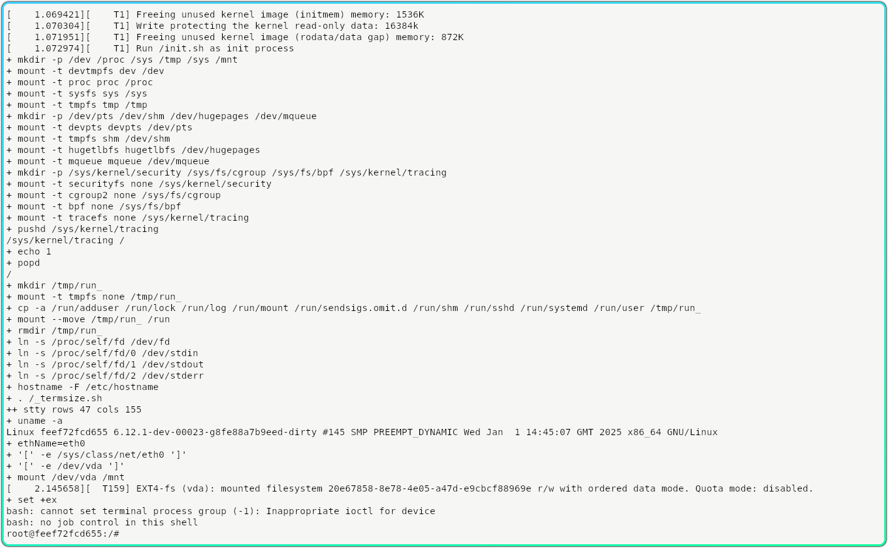
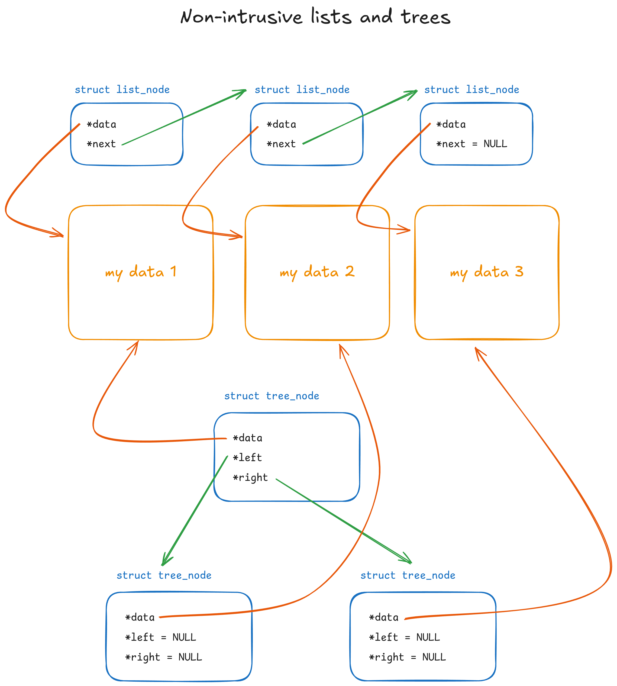
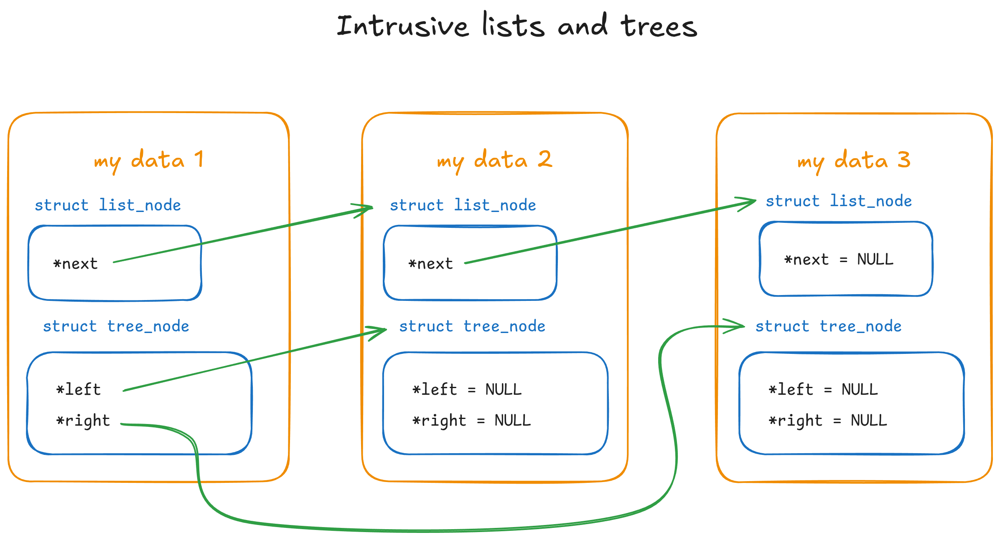
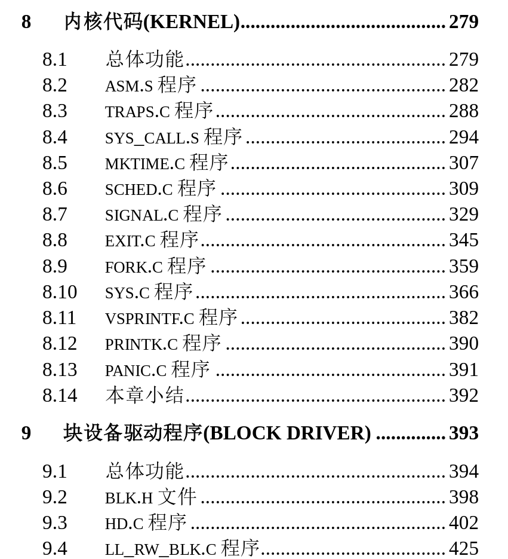

![A five-panel comic featuring the Linux mascot Tux with a bandage placed above it, and a box with a question-mark.
Panel 1: The box says “Am I being traced??” and Linux says “No trust me.”
Panel 2: The box says “Ok now guess the number”.
Panel 3: Linux says “1” and the box says “lol no, now get lost”.
Panel 4: The background has 2 clocks in random rotation and shear, and also has some lines which says “ick_revert_proc: Restoring CoW'd page at 0x00000000005cxxxx”, and the box is wrapped in a squiggly blue circle, and is itself distorted.
Panel 5: The box thinks “(hmm what was that must have been the wind)” and Linux says “jk i mean 2”.](cover.png)
Truth be told, I've never been really good at CTFs, but I do enjoy solving challenges at my own pace, and exploring perhaps less conventional methods, learning more about programming in the process. A few weeks ago Early this year I found a reverse engineering problem which basically boiled down to running a Linux binary and entering the correct number to get it to print a flag. The program was heavily obfuscated, has anti-debugging techniques, and potentially utilized self-modifying code, but strace shows that, aside from those, it did not try to do anything fancy with system calls, attempt to save files, or communicate via network.
Fortunately, the interesting bits of the program ran quite fast – after reading the input, it spends around 5us (0.005ms) before printing out whether the guess was correct or not. The input space was also very manageable – between 0 to 3,000,000. This means that even a brute-force search of the possible inputs could finish in a reasonable time, and there is no need to expend much effort on actual reverse engineering if we don't have to. The only tricky part is, how do we convince it to try different inputs as fast as this?
After considering some alternatives, my approach for solving this eventually ended up being a self-taught lesson in kernel hacking.
Before we get into more investigation, let's quickly explain what my test environment for this looks like. Since I'm not a fan of running random binaries from the Internet on my host system, we will only ever run the target binary in a VM. In fact, since there will be a good amount of kernel hacking today, we need a VM for which we can easily boot our hacked kernel in. Previously I made some shell scripts which come in handy. They:
strace, gdb, trace-cmd, etc.Once you've checked that you have Docker and QEMU installed, you can get started with the same environment by cloning micromaomao/linux-dev, running make -j$(nproc) to compile the kernel, then .dev/startvm.sh to build the rootfs (if not already present) and start the VM (your user account might need to be in the kvm group). If you are on ARM, remove the -enable-kvm and -cpu host flag in startvm.sh to use emulation instead.

A straightforward, first approach would be to just run it repeatedly. However, with such a short runtime between getting the input and printing the result, any significant overhead in either the initialization of the executable itself, or the time spent in the script used to repeatedly run it quickly starts to dominate. A quick test would be to run it under strace and see how long it takes from the initial execve to the first read. That would be a good starting point to understand more about the program and catch any potentially surprising behavior, so let's do that first.
Quick reminder again that you should not run or even interact with untrusted stuff directly on your host system. This includes running them under strace, gdb, or even using ldd on them.
$ strace -o strace.log --timestamps=ns ./hackme ... $ cat strace.log 21:00:00.076244725 execve("./hackme", ["./hackme"], 0x7ffc71a76088 /* 13 vars */) = 0 21:00:00.082059770 open("/proc/self/exe", O_RDONLY) = 3 21:00:00.085364610 mmap(NULL, 663446, PROT_READ|PROT_WRITE, MAP_PRIVATE|MAP_ANONYMOUS, -1, 0) = 0x7f7865402000 // mapping itself as (non-persistent) read-write 21:00:00.087883357 mmap(0x7f7865402000, 663048, PROT_READ|PROT_WRITE, MAP_PRIVATE|MAP_FIXED, 3, 0) = 0x7f7865402000 21:00:00.090062941 mprotect(0x7f78654a3000, 3990, PROT_READ|PROT_EXEC) = 0 21:00:00.092506797 readlink("/proc/self/exe", "/hackme", 4095) = 7 21:00:00.095318319 mmap(0x400000, 1855488, PROT_NONE, MAP_PRIVATE|MAP_FIXED|MAP_ANONYMOUS, -1, 0) = 0x400000 21:00:00.097642653 mmap(0x400000, 1536, PROT_READ|PROT_WRITE, MAP_PRIVATE|MAP_FIXED|MAP_ANONYMOUS, -1, 0) = 0x400000 21:00:00.099838908 mprotect(0x400000, 1536, PROT_READ) = 0 // rwx... I later realized this executable has gone through a packer 21:00:00.102363996 mmap(0x401000, 1420157, PROT_READ|PROT_WRITE|PROT_EXEC, MAP_PRIVATE|MAP_FIXED|MAP_ANONYMOUS, -1, 0x1000) = 0x401000 // ... more stuff follows which aren't too interesting for now ... 21:00:00.129039501 mprotect(0x401000, 1420157, PROT_READ|PROT_EXEC) = 0 21:00:00.132023341 mmap(0x55c000, 346488, PROT_READ|PROT_WRITE, MAP_PRIVATE|MAP_FIXED|MAP_ANONYMOUS, -1, 0x15c000) = 0x55c000 21:00:00.138600815 mprotect(0x55c000, 346488, PROT_READ) = 0 21:00:00.141142324 mmap(0x5b1000, 49832, PROT_READ|PROT_WRITE, MAP_PRIVATE|MAP_FIXED|MAP_ANONYMOUS, -1, 0x1b1000) = 0x5b1000 21:00:00.143710481 mprotect(0x5b1000, 49832, PROT_READ|PROT_WRITE) = 0 21:00:00.145928557 mmap(0x5be000, 27880, PROT_READ|PROT_WRITE, MAP_PRIVATE|MAP_FIXED|MAP_ANONYMOUS, -1, 0) = 0x5be000 21:00:00.148246519 mmap(NULL, 4096, PROT_READ, MAP_PRIVATE, 3, 0) = 0x7f7865401000 21:00:00.150516772 close(3) = 0 21:00:00.153247606 munmap(0x7f7865402000, 663446) = 0 21:00:00.155881587 arch_prctl(0x3001 /* ARCH_??? */, 0x7ffce824f170) = -1 EINVAL (Invalid argument) 21:00:00.158451970 brk(NULL) = 0x5c5000 21:00:00.160858466 brk(0x5c5d80) = 0x5c5d80 21:00:00.163373055 arch_prctl(ARCH_SET_FS, 0x5c5400) = 0 21:00:00.165862687 set_tid_address(0x5c56d0) = 184 21:00:00.168069772 set_robust_list(0x5c56e0, 24) = 0 21:00:00.170348551 rseq(0x5c5d20, 0x20, 0, 0x53053053) = 0 21:00:00.172586062 prlimit64(0, RLIMIT_STACK, NULL, {rlim_cur=8192*1024, rlim_max=RLIM64_INFINITY}) = 0 21:00:00.174898664 readlinkat(AT_FDCWD, "/proc/self/exe", "/hackme", 4096) = 7 21:00:00.177229490 getrandom("\xb8\xaa\xbf\x47\x80\xa4\x0a\x0e", 8, GRND_NONBLOCK) = 8 21:00:00.179682734 brk(NULL) = 0x5c5d80 21:00:00.181862768 brk(0x5e6d80) = 0x5e6d80 21:00:00.183994583 brk(0x5e7000) = 0x5e7000 21:00:00.186285765 mprotect(0x5b1000, 40960, PROT_READ) = 0 21:00:00.188569383 futex(0x5bd9dc, FUTEX_WAKE_PRIVATE, 2147483647) = 0 // Detecting debugger by looking for TracerPid? 21:00:00.190868059 openat(AT_FDCWD, "/proc/self/status", O_RDONLY) = 3 21:00:00.193172756 read(3, "Name:\thackme\nUmask:\t0022\nState:\t"..., 8191) = 1076 // ... more strace output ...
I suspect it is detecting debuggers and potentially changing its behavior. After writing this I later found out that it will actually pretend to run as normal even when it has detected a tracer, but will not print the flag even with the right input. For now, I found the code that puts that number in /proc/self/status by simply searching for “TracerPid”:
With the linux-dev environment I mentioned earlier, we can simply make the change, then run make -j16 (assuming your PC has 16 CPU threads) to produce a new kernel image, then kill the old VM (with Ctrl-D on the console or .dev/stopvm.sh if it's stuck) and run startvm.sh again.
You can apply the change above by copying the entire patch, then do git apply, paste it in, and hit Ctrl-D.
It then proceeded to do this, which I assume is a second layer of debugger detection:
ptrace(PTRACE_TRACEME) = -1 EPERM (Operation not permitted)
It is probably looking for whether this call returns a -EPERM, which would indicate that the process is (already) being traced. But since we're already making kernel changes, this is not difficult to work around either. We can find the relevant function by searching for PTRACE_TRACEME, which will quickly surface the function ptrace_traceme:
Quick note: instead of making such changes to the kernel, there are alternatives to strace which rely on seccomp-unotify instead of ptrace, which also get around anti-debugging techniques that target ptrace, and may be more convenient to use in other situations.
Now let's try strace it again:
$ strace -o strace.log --timestamps=ns ./hackme ... $ cat strace.log 21:01:00.368065520 execve("./hackme", ["./hackme"], 0x7ffe48cd5cb8 /* 6 vars */) = 0 ... 21:01:00.486692889 openat(AT_FDCWD, "/proc/self/status", O_RDONLY) = 3 21:01:00.489438989 read(3, "Name:\thackme\nUmask:\t0022\nState:\t"..., 8191) = 1066 21:01:00.491976961 close(3) = 0 21:01:00.494425997 getrandom("\x75\x79\x93\x7f\x58\x99\xe3\x3e", 8, 0) = 8 21:01:00.496887787 getrandom("\x21\x5f\xfa\x83\x6c\x93\xef\x97", 8, 0) = 8 21:01:00.499471244 ptrace(PTRACE_TRACEME) = 0 // yay 21:01:00.501847234 getrandom("\x32\x5b\x46\xf2\x18\x84\xee\x3e", 8, 0) = 8 // ... more getrandom ... 21:01:00.530190685 getrandom("\x25\x69\xff\xa5\x61\x13\x9d\x82", 8, 0) = 8 // Detecting if stdin/stdout is a terminal before read/write... // Could be using this to decide if it will buffer IO, or actual anti-scripting measure? 21:01:00.532301961 newfstatat(1, "", {st_mode=S_IFCHR|0600, st_rdev=makedev(0x5, 0x1), ...}, AT_EMPTY_PATH) = 0 21:01:00.535515472 ioctl(1, TCGETS, {c_iflag=ICRNL|IXON, c_oflag=NL0|CR0|TAB0|BS0|VT0|FF0|OPOST|ONLCR, c_cflag=B115200|CS8|CREAD|HUPCL|CLOCAL, c_lflag=ISIG|ICANON|ECHO|ECHOE|ECHOK|IEXTEN|ECHOCTL|ECHOKE, ...}) = 0 21:01:00.539257429 write(1, startup output..., 48) = 48 // ... 21:01:00.544755153 newfstatat(0, "", {st_mode=S_IFCHR|0600, st_rdev=makedev(0x5, 0x1), ...}, AT_EMPTY_PATH) = 0 21:01:00.547057135 ioctl(0, TCGETS, {c_iflag=ICRNL|IXON, c_oflag=NL0|CR0|TAB0|BS0|VT0|FF0|OPOST|ONLCR, c_cflag=B115200|CS8|CREAD|HUPCL|CLOCAL, c_lflag=ISIG|ICANON|ECHO|ECHOE|ECHOK|IEXTEN|ECHOCTL|ECHOKE, ...}) = 0 21:01:00.549331495 read(0, "1\n", 4096) = 2 // Note slight pause here due to input from serial terminal. 21:01:00.551503575 write(1, "Nope"..., 43) = 43 21:01:00.554241515 exit_group(0) = ? 21:01:00.556739011 +++ exited with 0 +++
If we use the kernel tracing tool trace-cmd (which interacts with ftrace and related APIs designed for both kernel debugging and performance tracing), we can find out how long the program spends computing the result after reading the input, not including time spent in the actual I/O, and also without any strace overhead (which was actually quite significant when you're looking at sub-ms level).
To do this, we can trace the syscalls family of events. We're specifically interested in read and write, and each syscall has two events we can trace: sys_enter_... and sys_exit_.... We specify these events with -e, and -F -c to only trace events from children processes.
trace-cmd record -e 'syscalls/sys_*_read' -e 'syscalls/sys_*_write' -F -c ./hackme
trace-cmd report
cpus=2 hackme-82 [000] ..... 4.364735: sys_exit_write: 0x1 hackme-82 [000] ..... 4.431209: sys_enter_read: fd: 0x00000003, buf: 0x005c6920, count: 0x00001fff hackme-82 [000] ..... 4.431220: sys_exit_read: 0x42c hackme-82 [000] ..... 4.431236: sys_enter_write: fd: 0x00000001, buf: 0x005c6920, count: 0x00000030 hackme-82 [000] ..... 4.431243: sys_exit_write: 0x30 hackme-82 [000] ..... 4.431244: sys_enter_write: fd: 0x00000001, buf: 0x005c6920, count: 0x00000026 hackme-82 [000] ..... 4.431244: sys_exit_write: 0x26 hackme-82 [000] ..... 4.431246: sys_enter_read: fd: 0x00000000, buf: 0x005c8960, count: 0x00001000 hackme-82 [001] ..... 5.737281: sys_exit_read: 0x2 hackme-82 [001] ..... 5.737292: sys_enter_write: fd: 0x00000001, buf: 0x005c6920, count: 0x0000002b hackme-82 [001] ..... 5.738621: sys_exit_write: 0x2b
We can ignore everything that is not reading from stdin (fd = 0) or writing to stdout (fd = 1) after that. Subtracting the two green numbers, that's 11us from returning from read to attempting write! On the other hand, getting to the first read from the start of the program took almost 200ms, and so if we have to run the whole thing repeatedly (for example, in a bash loop), it will be 200ms 3,000,000 7 days! Now, you can of course use more CPU cores and run multiple instances of this loop at once, but that's not a very interesting solution. In this case the challenge is also time-sensitive and so we need something better.
Notice that the program doesn't really try to do anything fancy (at least not externally visible) between read and write – all it does is spin some numbers around in its own memory, then spits out ‘Correct’ plus the flag, or ‘Nope’ if the guess was wrong. This means that, in theory, if we can perfectly restore the program's memory and register states1, we can instantly start trying a different input, then another one in 10us (when I ran it fast enough often it finishes within 5), and so on until we find the right number. Without the overhead of even forking another process, this has the potential to be a lot faster – we're basically turning the whole input validation process into a for loop! It's just that the ‘for’ in this case is outside the program.
Recently I have also been getting very interested in Linux kernel development (from debugging weird kernel panics at work  ), so I decided why not turn this into a kernel programming exercise, and try to get Linux to automatically try all the possible inputs for me, and restore the program state in between inputs, as suggested earlier?
), so I decided why not turn this into a kernel programming exercise, and try to get Linux to automatically try all the possible inputs for me, and restore the program state in between inputs, as suggested earlier?
The core idea is:
hackme”).read from stdin, we: write to stdout, we: read syscall, which will cause the next input to be injected; Now, this might seem like massive overkill, and it probably is, but hear me out:
I will now walk through each step one by one, as laid out above. If you as the reader don't have a lot of kernel experience (I don't claim to have), hopefully by going like this, this will not be too difficult to follow:
The first step (step 1) is to identify and mark the process we're interested in. In Linux, each thread is represented by a struct task_struct, which contains things like the PID, process name, memory mappings, and a thousand other things. We can of course add our own data to this struct – for example, we can have a bool to indicate whether a process4 is our hack target, and use it to decide if we should do special things in our modified read/write syscall handlers (we don't want to break unrelated processes like the shell, for example).
You probably know that when you run an executable, the shell forks a subprocess then runs exec with the command arguments. If we assume our target binary is always named “hackme”, we can check for this in the handler for exec, and set the bool we added previously to true.
With some searching around and perhaps tracing function calls with trace-cmd (which just uses ftrace), we find that there is a common function for execve and execveat – do_execveat_common, and so we can add our code there, and add the additional field to the task_struct:
Note that current is just a macro for a pointer to the current thread's task_struct, and pr_info prints to the syslog which in our case appears on the console.
We also added the correct initialization of .hack_target for unrelated threads to init_task, which is what every other processes are forked from. When a process forks or clones, the entire task struct is first memcpy'd across (see arch_dup_task_struct (arch/x86/kernel/process.c)), and so there's no other place we need to initialize this (except for in execve when we detected a hack target).
Let's test this out:
> make -j$(nproc) ... > ./.dev/startvm.sh ... [ 0.000000][ T0] Linux version 6.12.1-dev-00019-gc33353343963-dirty ... ... root@feef72fcd655:/# ./hackme [ 5.050260][ T79] execveat: ./hackme[79] to be hacked (program prints startup message normally) root@feef72fcd655:/# cp hackme dont-hack-me root@feef72fcd655:/# ./dont-hack-me (program prints startup message normally) root@feef72fcd655:/#
Nice :)
Our next step (step 2) is to figure out a way to save off the state of the target process when it calls read – in some sense, ‘checkpoint’ it, and then inject our number guess. I'm going to give my special kernel feature that does this a slick name: ick, which stands for Instant ChecKpoint. We will create some utility functions which we can call in our patched read/write to checkpoint and restore the process, as well as a way to clean up the saved state should the process exits unexpectedly. Let's start by creating our header and C file for this feature, adding a basic struct ick_checked_process* pointer in task_struct for us to hold various data (like the saved off memory pages) later, and declare our functions.
While this is not really necessary, let's also add a proper config option for our silly little feature – it's not difficult to do, and follows the rest of Linux. We will then gate all ick-related code within #ifdef CONFIG_ICK blocks.
In case you didn't know, the proper way to have a function without parameters in C is to use void in the parameter list, like void myfunc(void).
read, inject our guessNext, we can finish off the relatively easier part of step 2 – handling read, calling the checkpoint function, and injecting our next guess. Again, we can use ftrace to figure out the best function to change. There are more ‘complicated’ variants of the read syscall that take a struct iovec, but that's not what our target binary uses, so we won't worry about that.
While we can use strace to see whether we're sending back the right thing to the user-space, for ease of debugging we can write our own test binary which prints out the number received, and also, for now, loops back itself, so that we can see if the guess increments correctly: my-hackme-looped.cpp
make; ./dev/startvm.sh root@feef72fcd655:/# ./my-hackme-looped | head [ 34.542186][ T83] execveat: ./my-hackme-looped[83] to be hacked Enter number: Nope! 1 was a wrong guess. The correct number is 574165. Enter number: Nope! 2 was a wrong guess. The correct number is 574165. Enter number: Nope! 3 was a wrong guess. The correct number is 574165. Enter number: Nope! 4 was a wrong guess. The correct number is 574165. Enter number: Nope! 5 was a wrong guess. The correct number is 574165. Enter number: Nope! 6 was a wrong guess. The correct number is 574165. Enter number: Nope! 7 was a wrong guess. The correct number is 574165. Enter number: Nope! 8 was a wrong guess. The correct number is 574165. Enter number: Nope! 9 was a wrong guess. The correct number is 574165. Enter number: Nope! 10 was a wrong guess. The correct number is 574165. root@feef72fcd655:/# ./my-hackme-looped | tail [ 36.012463][ T85] execveat: ./my-hackme-looped[85] to be hacked Enter number: Nope! 494491 was a wrong guess. The correct number is 494500. Enter number: Nope! 494492 was a wrong guess. The correct number is 494500. Enter number: Nope! 494493 was a wrong guess. The correct number is 494500. Enter number: Nope! 494494 was a wrong guess. The correct number is 494500. Enter number: Nope! 494495 was a wrong guess. The correct number is 494500. Enter number: Nope! 494496 was a wrong guess. The correct number is 494500. Enter number: Nope! 494497 was a wrong guess. The correct number is 494500. Enter number: Nope! 494498 was a wrong guess. The correct number is 494500. Enter number: Nope! 494499 was a wrong guess. The correct number is 494500. Enter number: Correct! root@feef72fcd655:/#
Great success! Note that at this point we haven't even touched write yet – this is only looping because our test program has a deliberate loop inside, but we will eventually not need that once we implement the checkpointing.
Also note that for very frequent output, I have used trace_printk which doesn't print to the console, but can be seen in the kernel trace. As opposed to pr_info/printk, this is just writing to a ringbuffer in memory, and so is also much faster and more appropriate to use in tight loops.
root@feef72fcd655:/# tail /sys/kernel/tracing/trace
my-hackme-loope-90 [001] ..... 447.571690: ksys_read: ick checkpoint on hacked process my-hackme-loope[90]
my-hackme-loope-90 [001] ..... 447.571690: ksys_read: Providing number 27 to hacked process my-hackme-loope[90]
my-hackme-loope-90 [001] ..... 447.571691: ksys_read: ick checkpoint on hacked process my-hackme-loope[90]
my-hackme-loope-90 [001] ..... 447.571691: ksys_read: Providing number 28 to hacked process my-hackme-loope[90]
... ... ... ...
write to call our revert functionLet's also do the same for write – we will get the print output from user-space, and depending on whether we see a “Nope” we will either restore checkpoint, or let the process continue (handling the write as normal).
Since we haven't implemented checkpoint restore yet, the overall behaviour currently will not change. However, since we're effectively ‘consuming’ any output with “Nope!” (by not returning from ksys_write instead of letting it continue), we should not see them in the console, but we should still see our trace_printk printing them out:
root@feef72fcd655:/# ./my-hackme-looped
[ 7.461863][ T84] execveat: ./my-hackme-looped[84] to be hacked
[ 7.487957][ T84] hack: 0 gave different output
Enter number: [ 7.492040][ T84] hack: 1 gave different output
Enter number: [ 7.493428][ T84] hack: 2 gave different output
Correct!
root@feef72fcd655:/# cat /sys/kernel/tracing/trace
# tracer: nop
... ... ... ...
my-hackme-loope-84 [000] d.... 7.461871: console: execveat: ./my-hackme-looped[84] to be hacked
my-hackme-loope-84 [000] ..... 7.487955: ksys_write: hacked process attempted write with data Enter number:
my-hackme-loope-84 [000] d.... 7.487961: console: hack: 0 gave different output
my-hackme-loope-84 [000] ..... 7.490135: ksys_read: ick checkpoint on hacked process my-hackme-loope[84]
my-hackme-loope-84 [000] ..... 7.490136: ksys_read: Providing number 1 to hacked process my-hackme-loope[84]
my-hackme-loope-84 [000] ..... 7.492037: ksys_write: hacked process attempted write with data Nope! 1 was a wrong guess. The correct number is 2.
my-hackme-loope-84 [000] ..... 7.492039: ksys_write: hacked process attempted write with data Enter number:
my-hackme-loope-84 [000] d.... 7.492042: console: hack: 1 gave different output
my-hackme-loope-84 [000] ..... 7.493423: ksys_read: ick checkpoint on hacked process my-hackme-loope[84]
my-hackme-loope-84 [000] ..... 7.493424: ksys_read: Providing number 2 to hacked process my-hackme-loope[84]
my-hackme-loope-84 [000] ..... 7.493427: ksys_write: hacked process attempted write with data Correct!
my-hackme-loope-84 [000] d.... 7.493430: console: hack: 2 gave different output
You do not need trace-cmd or even enabling tracing in tracefs to see trace_printk outputs.
Note that the “_ gave different output” prints are because the program was writing “Enter number: ” every loop iteration, which doesn't contain “Nope!”. Once our checkpoint restore is working, the program should end up back to when it first issues the read, which means that any prompt to enter number would no longer be printed again.
If you had a look at struct task_struct and concluded that there is nothing in there that looks like it stores the thread's registers, you're correct. So, what are we supposed to save/restore?
In Linux, each thread has a kernel stack which is used when it is executing kernel code (for example, when it is handling a syscall). This is separate from the user-space stack, and in fact lives in kernel memory not accessible from user-space. When a thread is running user-space code, it is empty. Whenever the thread enters the kernel, for example due to a syscall (or other reasons like interrupts), kernel entry code (arch/x86/entry/entry_64.S) pushes all the (general-purpose) registers from user-space onto this stack before calling into any C functions, which will start messing up the registers (especially the caller-saved ones, since the compiler isn't required to restore them at the end of a function):
SYM_CODE_START(entry_SYSCALL_64)
...
PUSH_AND_CLEAR_REGS rax=$-ENOSYS
...
call do_syscall_64 /* returns with IRQs disabled */
.macro PUSH_REGS rdx=%rdx rcx=%rcx rax=%rax save_ret=0 unwind_hint=1
.if \save_ret
pushq %rsi /* pt_regs->si */
movq 8(%rsp), %rsi /* temporarily store the return address in %rsi */
movq %rdi, 8(%rsp) /* pt_regs->di (overwriting original return address) */
.else
pushq %rdi /* pt_regs->di */
pushq %rsi /* pt_regs->si */
.endif
pushq \rdx /* pt_regs->dx */
pushq \rcx /* pt_regs->cx */
pushq \rax /* pt_regs->ax */
pushq %r8 /* pt_regs->r8 */
pushq %r9 /* pt_regs->r9 */
pushq %r10 /* pt_regs->r10 */
pushq %r11 /* pt_regs->r11 */
pushq %rbx /* pt_regs->rbx */
pushq %rbp /* pt_regs->rbp */
pushq %r12 /* pt_regs->r12 */
pushq %r13 /* pt_regs->r13 */
pushq %r14 /* pt_regs->r14 */
pushq %r15 /* pt_regs->r15 */
.if \unwind_hint
UNWIND_HINT_REGS
.endif
.if \save_ret
pushq %rsi /* return address on top of stack */
.endif
.endm
.macro PUSH_AND_CLEAR_REGS rdx=%rdx rcx=%rcx rax=%rax save_ret=0 clear_bp=1 unwind_hint=1
PUSH_REGS rdx=\rdx, rcx=\rcx, rax=\rax, save_ret=\save_ret unwind_hint=\unwind_hint
CLEAR_REGS clear_bp=\clear_bp
.endm
The result of the register pushing code is that the top (i.e. ‘outer-most’ frame) of the task stack effectively contains a struct pt_regs5 after this. On kernel exit, this is popped back into the actual registers before returning to user-space. Therefore, it's reasonable to think that if we save and restore this struct pt_regs, we can effectively save and restore the register states of the calling thread.
Assuming our hypothesis is correct, we can start implementing the register saving part of ick. Some searching around the kernel code would reveal that we can use the current_pt_regs macro to get a pointer to this struct for our current task. See for example arch/x86/kernel/process.c:231 (in copy_thread). This function is called when a thread calls fork, and it copies the pt_regs from the current task (the parent that called fork) to the new child task.
Let's try it out:
root@c8c5a2904008:/# ./my-hackme-looped [ 4.294402][ T79] execveat: ./my-hackme-looped[79] to be hacked [ 4.323670][ T79] hack: 0 gave different output Enter number: [ 4.327423][ T79] my-hackme-loope[79]: segfault at 3a ip 000000000000003a sp 00007ffd0a4a49f0 error 14 likely on CPU 1 (core 1, socket 0) [ 4.329196][ T79] Code: Unable to access opcode bytes at 0x10.
Hmm… The program crashed because it tried to jump to some nonsensical instruction address (0x0000003a). Now, remember that we haven't implemented memory restore yet, and ‘memory’ includes the (user-space) stack as well. Consider what happens when you call a C function like read: the return address gets pushed to the stack, the function executes, and when it finishes the ret instruction pops that address from the stack and jumps to the caller. The caller may then call other functions, which will push and pop more data and return addresses from the stack, overwriting the previous one. Therefore, until we implements checkpoint/restore of memory, we will never be able to return to the original call side anyway, and it is perfectly possible that if the call stack for the read and write functions are at different depths, restoring the registers would result in the stack pointer pointing at garbage, rather than a valid return address.
We can confirm what's going on with gdb. First we tell it to stop on the first read, so that we can inspect the registers:
root@c8c5a2904008:/# gdb my-hackme-looped
GNU gdb (Debian 13.1-3) 13.1
...
Reading symbols from my-hackme-looped...
(gdb) catch syscall read
Catchpoint 1 (syscall 'read' [0])
(gdb) condition 1 $rdi == 0
(gdb) r
Starting program: /my-hackme-looped
[ 32.349018][ T94] execveat: /my-hackme-looped[94] to be hacked
[ 32.393885][ T94] hack: 0 gave different output
Enter number:
Catchpoint 1 (call to syscall read), 0x000000000053eed1 in read ()
(gdb)
The instruction condition 1 $rdi == 0 makes the catchpoint only trigger on read from stdin ($rdi holds the first argument, and that is the file descriptor in the case of read/write). The catchpoint will trigger before the syscall is actually executed by the kernel (although because it uses ptrace to trap on syscalls, $rip will point to the instruction after the syscall, looking as-if the syscall has already executed).
(gdb) disas $rip Dump of assembler code for function read: 0x000000000053eec0 <+0>: endbr64 0x000000000053eec4 <+4>: cmpb $0x0,0xa668d(%rip) # 0x5e5558 <__libc_single_threaded> 0x000000000053eecb <+11>: je 0x53eee0 <read+32> 0x000000000053eecd <+13>: xor %eax,%eax 0x000000000053eecf <+15>: syscall => 0x000000000053eed1 <+17>: cmp $0xfffffffffffff000,%rax 0x000000000053eed7 <+23>: ja 0x53ef28 <read+104> 0x000000000053eed9 <+25>: ret 0x000000000053eeda <+26>: nopw 0x0(%rax,%rax,1) 0x000000000053eee0 <+32>: push %rbp
Let's note down the registers:
(gdb) info reg rax 0xffffffffffffffda -38 rbx 0x5e4a00 6179328 rcx 0x53eed1 5500625 rdx 0x1000 4096 rsi 0x6038a0 6305952 rdi 0x0 0 rbp 0x7fffffffd800 0x7fffffffd800 rsp 0x7fffffffd7c8 0x7fffffffd7c8 r8 0x0 0 r9 0x4 4 r10 0x405b0f 4217615 r11 0x246 582 r12 0x5e1e10 6168080 r13 0x5e1cc0 6167744 r14 0x5e4820 6178848 r15 0x5e1e10 6168080 rip 0x53eed1 0x53eed1 <read+17> eflags 0x246 [ PF ZF IF ] cs 0x33 51 ss 0x2b 43 ds 0x0 0 es 0x0 0 fs 0x0 0 gs 0x0 0 (gdb)
Ok, let's allow the program to continue to write:
(gdb) catch syscall write Catchpoint 2 (syscall 'write' [1]) (gdb) c Continuing. Catchpoint 1 (returned from syscall read), 0x000000000053eed1 in read () (gdb) c Continuing. Catchpoint 2 (call to syscall write), 0x000000000053ef74 in write () (gdb)
Let's see the registers again, before we enter the syscall:
(gdb) info reg rax 0xffffffffffffffda -38 rbx 0x3a 58 rcx 0x53ef74 5500788 rdx 0x3a 58 rsi 0x602890 6301840 rdi 0x1 1 rbp 0x7fffffffd7b0 0x7fffffffd7b0 rsp 0x7fffffffd788 0x7fffffffd788 r8 0xcccccccccccccccd -3689348814741910323 r9 0x7fffffffd7a0 140737488344992 r10 0x1 1 r11 0x202 514 r12 0x3a 58 r13 0x602890 6301840 r14 0x5e4820 6178848 r15 0x5e1cc0 6167744 rip 0x53ef74 0x53ef74 <write+20> eflags 0x202 [ IF ] cs 0x33 51 ss 0x2b 43 ds 0x0 0 es 0x0 0 fs 0x0 0 gs 0x0 0 (gdb)
Looks quite different from before! Now we let it continue, then we shall see the registers reverting to the state before the read:
(gdb) c Continuing. Catchpoint 1 (returned from syscall read), 0x000000000053eed1 in read () (gdb) info reg rax 0x3a 58 rbx 0x5e4a00 6179328 rcx 0x53eed1 5500625 rdx 0x1000 4096 rsi 0x6038a0 6305952 rdi 0x0 0 rbp 0x7fffffffd800 0x7fffffffd800 rsp 0x7fffffffd7c8 0x7fffffffd7c8 r8 0x0 0 r9 0x4 4 r10 0x405b0f 4217615 r11 0x246 582 r12 0x5e1e10 6168080 r13 0x5e1cc0 6167744 r14 0x5e4820 6178848 r15 0x5e1e10 6168080 rip 0x53eed1 0x53eed1 <read+17> eflags 0x246 [ PF ZF IF ] cs 0x33 51 ss 0x2b 43 ds 0x0 0 es 0x0 0 fs 0x0 0 gs 0x0 0 (gdb)
Seems pretty successful - we've even confused gdb (it says “returned from syscall read”). Note that rax is the syscall return value, and therefore it is reasonable for it to be different before and after the syscall. Careful readers might have noticed something unusual here, but let's save that for later :)
We know that if we let it continue it will just crash, but let's see what happens anyway, just for fun. ni basically lets it run one more instruction, then stop it again:
(gdb) disas $rip Dump of assembler code for function read: 0x000000000053eec0 <+0>: endbr64 0x000000000053eec4 <+4>: cmpb $0x0,0xa668d(%rip) # 0x5e5558 <__libc_single_threaded> 0x000000000053eecb <+11>: je 0x53eee0 <read+32> 0x000000000053eecd <+13>: xor %eax,%eax 0x000000000053eecf <+15>: syscall => 0x000000000053eed1 <+17>: cmp $0xfffffffffffff000,%rax 0x000000000053eed7 <+23>: ja 0x53ef28 <read+104> 0x000000000053eed9 <+25>: ret ... (gdb) ni 0x000000000053eed7 in read () (gdb) 0x000000000053eed9 in read () (gdb) 0x000000000000003a in ?? () (gdb)
Ok, that didn't take very long to break.
Now, some of you might have noticed the lack of the more ‘unusual’ registers in the PUSH_REGS code above (or in struct pt_regs), and if you're questioning whether just saving the general-purpose registers in pt_regs is enough, you're right. We have not saved any of xmm0-xmm31 (or their y/z extensions) which are used for floating point operations and various generations of SIMD, or the FS and GS segment registers which can be set by user-space (most notably, libc uses them to point to the start of thread-local storage, which obviously shouldn't change in the lifetime of a thread, but really they can be used in whatever ways by an obfuscated program).
However, in a sensible program linking to a ‘normal’ libc, neither of these ought to matter. This is because, as noted earlier, the segment registers shouldn't normally change inside a thread, and the SIMD registers are caller-saved6, which means that the compiler isn't supposed to rely on them surviving across a call to libc's read() or write() wrappers (although technically syscall is supposed to preserve those).
For performance reasons the kernel does not save these registers to memory on every kernel entry, but only when it is about to context-switch to another task.7 After all, the ?mm registers, on a new-enough CPU with AVX-512, total to 512 bits 32 = 2 KiB (not counting the vector mask registers, etc). This makes our life harder if we want to save/restore those (which is technically the correct thing to do for a fully working save/restore), but since they are unlikely to break a ‘reasonable’ program, we will leave them untouched for now.
Do you want to learn more about how Linux manages processes, does context switches, and similar low-level topics, or just learn more about the kernel in general? Check out these highly informative lecture notes: Operating Systems 2 (maybe after you're done with this article ).
Ok. now finally the exciting part! This part is going to be a bit more difficult if you aren't familiar with how ‘memory paging’ or page faults work. There are two videos which I found quite informative:
However, don't be alarmed by this – understanding how page tables work helps, but we won't need to do any manual manipulation to these tables. Let's start by looking at how Linux manages a process's memory.
There are multiple ways we could go about this – one thing we can do is to follow what happens on a fork, and try to replicate that (but only the memory part). We can again use the fork-test.c program for this.
fork do?Starting with a simple trace-cmd record, it gives us a bunch of garbage, probably because it's recording the executable initialization as well:
root@f8b9ed144f52:/# trace-cmd record -p function_graph --max-graph-depth 4 -F -c ./fork-test
plugin 'function_graph'
I am the parent. Fork took 222414 ns to return
I am the child. It took 1151499 ns to fork
CPU0 data recorded at offset=0xbc000
54349 bytes in size (294912 uncompressed)
root@f8b9ed144f52:/# trace-cmd report > a.log
root@f8b9ed144f52:/# less a.log
fork-test-92 [000] 153.874423: funcgraph_entry: 1.623 us | mutex_unlock();
fork-test-92 [000] 153.874425: funcgraph_entry: | __f_unlock_pos() {
fork-test-92 [000] 153.874425: funcgraph_entry: 0.311 us | mutex_unlock();
fork-test-92 [000] 153.874426: funcgraph_exit: 0.961 us | }
fork-test-92 [000] 153.874426: funcgraph_entry: 0.391 us | fpregs_assert_state_consistent();
fork-test-92 [000] 153.874429: funcgraph_entry: | x64_sys_call() {
fork-test-92 [000] 153.874430: funcgraph_entry: | __x64_sys_execve() {
fork-test-92 [000] 153.874430: funcgraph_entry: | getname() {
fork-test-92 [000] 153.874431: funcgraph_entry: 0.612 us | getname_flags();
fork-test-92 [000] 153.874432: funcgraph_exit: 1.212 us | }
fork-test-92 [000] 153.874432: funcgraph_entry: | do_execveat_common.isra.0() {
fork-test-92 [000] 153.874433: funcgraph_entry: | alloc_bprm() {
<idle>-0 [000] 153.874798: funcgraph_entry: 0.452 us | _raw_spin_lock_irqsave();
<idle>-0 [000] 153.874798: funcgraph_entry: 0.100 us | _raw_spin_unlock_irqrestore();
<idle>-0 [000] 153.874799: funcgraph_entry: 0.141 us | switch_mm_irqs_off();
... ... ... ... ... ...
fork-test-92 [000] 153.878550: funcgraph_entry: | handle_mm_fault() {
fork-test-92 [000] 153.878550: funcgraph_entry: | __handle_mm_fault() {
fork-test-92 [000] 153.878550: funcgraph_entry: | pte_offset_map_nolock() {
fork-test-92 [000] 153.878551: funcgraph_entry: 0.140 us | __pte_offset_map();
fork-test-92 [000] 153.878551: funcgraph_exit: 0.351 us | }
fork-test-92 [000] 153.878551: funcgraph_entry: 0.110 us | __rcu_read_unlock();
fork-test-92 [000] 153.878551: funcgraph_entry: 0.100 us | __rcu_read_lock();
fork-test-92 [000] 153.878551: funcgraph_entry: | filemap_map_pages() {
fork-test-92 [000] 153.878552: funcgraph_entry: 0.109 us | __rcu_read_lock();
fork-test-92 [000] 153.878552: funcgraph_entry: 0.431 us | next_uptodate_folio();
fork-test-92 [000] 153.878552: funcgraph_entry: 0.230 us | __pte_offset_map_lock();
...
Thankfully, there is a useful flag for us for exactly this situation:
-g function-name
This option is for the function_graph plugin. It will graph the given
function. That is, it will only trace the function and all functions that it
calls. You can have more than one -g on the command line.
You can search through the list of available functions by looking at available_filter_functions under tracefs:
root@f8b9ed144f52:/# cat /sys/kernel/tracing/available_filter_functions | grep fork
ret_from_fork
__do_sys_fork
__do_sys_vfork
tsk_fork_get_node
fork_usermode_driver
Let's try __do_sys_fork:
root@f8b9ed144f52:/# trace-cmd record -p function_graph --max-graph-depth 4 -g __do_sys_fork -F -c ./fork-test
plugin 'function_graph'
I am the parent. Fork took 174195 ns to return
I am the child. It took 1053852 ns to fork
CPU0 data recorded at offset=0xbc000
1619 bytes in size (8192 uncompressed)
root@f8b9ed144f52:/# trace-cmd report
cpus=1
fork-test-107 [000] 766.823819: funcgraph_entry: | __do_sys_fork() {
fork-test-107 [000] 766.823820: funcgraph_entry: | kernel_clone() {
fork-test-107 [000] 766.823820: funcgraph_entry: | copy_process() {
fork-test-107 [000] 766.823820: funcgraph_entry: 0.361 us | _raw_spin_lock_irq();
fork-test-107 [000] 766.823821: funcgraph_entry: 0.181 us | recalc_sigpending();
fork-test-107 [000] 766.823821: funcgraph_entry: 0.100 us | _raw_spin_unlock_irq();
fork-test-107 [000] 766.823822: funcgraph_entry: 0.120 us | tsk_fork_get_node();
... ... ... ... ... ...
fork-test-107 [000] 766.823841: funcgraph_entry: 0.120 us | posix_cputimers_group_init();
fork-test-107 [000] 766.823841: funcgraph_entry: 0.100 us | __mutex_init();
fork-test-107 [000] 766.823842: funcgraph_entry: 0.101 us | __init_rwsem();
fork-test-107 [000] 766.823842: funcgraph_entry: + 44.784 us | copy_mm();
fork-test-107 [000] 766.823887: funcgraph_entry: 0.211 us | copy_namespaces();
fork-test-107 [000] 766.823887: funcgraph_entry: 0.751 us | copy_thread();
fork-test-107 [000] 766.823888: funcgraph_entry: 1.172 us | alloc_pid();
fork-test-107 [000] 766.823889: funcgraph_entry: 0.111 us | __mutex_init();
fork-test-107 [000] 766.823890: funcgraph_entry: 0.130 us | user_disable_single_step();
fork-test-107 [000] 766.823890: funcgraph_entry: 0.151 us | clear_posix_cputimers_work();
Hey, isn't this much nicer! Now, one of the function here looks quite interesting: copy_mm. There is a lot of stuff going on underneath that function, but if you follow the function calls, you will eventually find this bit in dup_mmap:
for_each_vma(vmi, mpnt) {
...
if (!(tmp->vm_flags & VM_WIPEONFORK))
retval = copy_page_range(tmp, mpnt);
This is executed under a for_each_vma. VMA here means ‘Virtual Memory Area’, and it represents a memory mapping, which can be either a file, other exotic stuff like devices, or anonymous (i.e. ‘normal’ RAM), which is what we care the most about.
From copy_page_range, after descending through the copy_p?d_range (which we can guess is dealing with lower and lower page tables), ignoring code which handles huge pages, we end up in copy_present_ptes. In this and related memory management functions, we see the concept of a ‘folio’. They are basically consecutive pages that are to be allocated, copied, and freed together.8
For example, when you ask for a large chunk of anonymous memory via mmap, the kernel may allocate in 16 KiB chunks, instead of individual page-by-page.
copy_present_ptes has branches for both the single-page case and batching copying for multiple consecutive pages, but in both case it does two crucial things which might not be obvious at first glance. First we have:
folio_ref_add(folio, nr);
// or, in the single-page case:
folio_get(folio);
xxx_get is a common naming scheme in the kernel for functions that e.g. increases a reference count. Similarly xxx_put will usually decrement a reference count and free resources. While I don't completely get the naming (I guess you can get stuff and ‘put’ stuff back??), this pattern is also somewhat consistently used for e.g. files, tasks, namespaces and other resources that can have shared ownership.
Note that in this case, the reference count of this folio is used to determine how many processes9 have this page mapped (potentially in a write-protected state) – we shall see where this is used later.
It then calls __copy_present_ptes, which contains this bit that should seem very interesting for what we're trying to do here:
static __always_inline void __copy_present_ptes(struct vm_area_struct *dst_vma,
struct vm_area_struct *src_vma, pte_t *dst_pte, pte_t *src_pte,
pte_t pte, unsigned long addr, int nr)
{
struct mm_struct *src_mm = src_vma->vm_mm;
/* If it's a COW mapping, write protect it both processes. */
if (is_cow_mapping(src_vma->vm_flags) && pte_write(pte)) {
wrprotect_ptes(src_mm, addr, src_pte, nr);
pte = pte_wrprotect(pte);
}
/* If it's a shared mapping, mark it clean in the child. */
Hmm, ok. This seems to just be setting the page table entries (PTEs) to be read-only (write-protect) if this page is supposed to CoW. If you drill down into either wrprotect_ptes or pte_wrprotect, none of those functions does anything fancy aside from just manipulating or setting the PTE flags.
Note that __copy_present_ptes does 2 things at once – copy the PTEs to the child process's page table, and setting them as read-only in both the parent and the child if it is Copy-on-Write (CoW). This is slightly different from what we want to do, because we don't want to create a new page table – we just want to write-protect all the existing pages. How would we do that? We will find out in a bit – for now let's try to find out a bit more about memory management.
Have you ever wanted to run an actual kernel debugger? We can try breaking in the kernel when our test program makes the fork syscall. First we need a debug break just so that gdb can connect to the kernel and we can set our breakpoint:
root@f8b9ed144f52:/# echo g > /proc/sysrq-trigger [ 21.811502][ T71] sysrq: DEBUG Entering kdb (current=0xffff888003898e80, pid 71) on processor 0 due to NonMaskable Interrupt @ 0xffffffff8115fb08 [0]kdb>
Now, in another terminal, open the linux-dev directory and do:
> ./.dev/kgdb.sh
# sometimes this would fail to connect. If you don't see a backtrace, do "q" then try again
GNU gdb (GDB) 15.2
...
Reading symbols from ../vmlinux...
Remote debugging using kgdb.sock
kgdb_breakpoint () at kernel/debug/debug_core.c:1222
1222 wmb(); /* Sync point after breakpoint */
#0 kgdb_breakpoint () at kernel/debug/debug_core.c:1222
...
(gdb) b __do_sys_fork
Breakpoint 1 at 0xffffffff810836c0: file kernel/fork.c, line 2888.
(gdb) c
Continuing.
Now, in the VM terminal, run our test program:
root@f8b9ed144f52:/# exec ./fork-test # Use exec so that we don't break on the shell's fork10
And back to gdb:
[Thread 8 exited]
Thread 41 hit Breakpoint 1, __do_sys_fork (__unused=0xffffc9000014bf58) at kernel/fork.c:2888
2888 {
(gdb) bt
#0 __do_sys_fork (__unused=0xffffc9000014bf58) at kernel/fork.c:2888
#1 0xffffffff81002b79 in x64_sys_call (regs=regs@entry=0xffffc9000014bf58, nr=<optimized out>) at ./arch/x86/include/generated/asm/syscalls_64.h:58
#2 0xffffffff81869db0 in do_syscall_x64 (regs=0xffffc9000014bf58, nr=<optimized out>) at arch/x86/entry/common.c:52
#3 do_syscall_64 (regs=0xffffc9000014bf58, nr=<optimized out>) at arch/x86/entry/common.c:83
#4 0xffffffff81a000b0 in entry_SYSCALL_64 () at arch/x86/entry/entry_64.S:121
#5 0x00007fd58ea30020 in ?? ()
#6 0x000055b95d166dd8 in ?? ()
#7 0x00007ffd638ff2c8 in ?? ()
#8 0x0000000000000000 in ?? ()
(gdb)
Maybe let's just break on that __copy_present_ptes function mentioned earlier and see how it's called:
(gdb) b __copy_present_ptes
Breakpoint 2 at 0xffffffff8129b0d8: __copy_present_ptes. (2 locations)
(gdb) c
Continuing.
Thread 41 hit Breakpoint 2.1, __copy_present_ptes (dst_vma=<optimized out>, src_vma=0xffff88800391c428, dst_pte=0xffff88800392bb30, src_pte=0xffff88800398fb30, pte=..., addr=94254619058176, nr=1) at mm/memory.c:956
956 if (is_cow_mapping(src_vma->vm_flags) && pte_write(pte)) {
(gdb) bt
#0 __copy_present_ptes (dst_vma=<optimized out>, src_vma=0xffff88800391c428, dst_pte=0xffff88800392bb30, src_pte=0xffff88800398fb30, pte=..., addr=94254619058176, nr=1) at mm/memory.c:956
#1 copy_present_ptes (dst_vma=<optimized out>, src_vma=0xffff88800391c428, dst_pte=0xffff88800392bb30, src_pte=0xffff88800398fb30, pte=..., addr=94254619058176, max_nr=<optimized out>, rss=0xffffc9000014bc80,
prealloc=<synthetic pointer>) at mm/memory.c:1052
#2 copy_pte_range (dst_vma=<optimized out>, src_vma=0xffff88800391c428, dst_pmd=<optimized out>, src_pmd=<optimized out>, addr=94254619058176, end=<optimized out>) at mm/memory.c:1167
#3 copy_pmd_range (dst_vma=<optimized out>, src_vma=0xffff88800391c428, dst_pud=<optimized out>, src_pud=<optimized out>, addr=<optimized out>, end=<optimized out>) at mm/memory.c:1255
#4 copy_pud_range (dst_vma=<optimized out>, src_vma=0xffff88800391c428, dst_p4d=<optimized out>, src_p4d=<optimized out>, addr=<optimized out>, end=<optimized out>) at mm/memory.c:1292
#5 copy_p4d_range (dst_vma=<optimized out>, src_vma=<optimized out>, dst_pgd=<optimized out>, src_pgd=<optimized out>, addr=<optimized out>, end=<optimized out>) at mm/memory.c:1316
#6 copy_page_range (dst_vma=dst_vma@entry=0xffff8880039194c0, src_vma=src_vma@entry=0xffff88800391c428) at mm/memory.c:1414
#7 0xffffffff81080b27 in dup_mmap (mm=0xffff88800284ca00, oldmm=0xffff88800284cf00) at kernel/fork.c:749
#8 dup_mm (tsk=0xffff888003898000, oldmm=0xffff88800284cf00) at kernel/fork.c:1691
#9 copy_mm (clone_flags=clone_flags@entry=0, tsk=tsk@entry=0xffff888003898000) at kernel/fork.c:1743
#10 0xffffffff8108260a in copy_process (pid=pid@entry=0x0 <fixed_percpu_data>, trace=trace@entry=0, node=node@entry=-1, args=args@entry=0xffffc9000014be98) at kernel/fork.c:2393
#11 0xffffffff810830a0 in kernel_clone (args=args@entry=0xffffc9000014be98) at kernel/fork.c:2805
#12 0xffffffff81083705 in __do_sys_fork (__unused=<optimized out>) at kernel/fork.c:2894
The copy_p?d_range functions here are indeed just descending down the page table levels (p4d = level 4, pud = page ‘upper’ directory aka. level 3, pmd = page ‘middle’ directory aka. level 2, and copy_pte_range copies the first level table). In this case, given the backtrace above, the folio is just one page.
Ok, that's great, but later on if we get a write page fault, how does the kernel know this page is supposed to be CoW'd (rather than, say, treating that fault as an error)? What would happen if our own code manages to set the pages on a process to be write-protected, even when they're not in a CoW state?
Because our fork-test.c program (and really all the programs in general) uses a stack, we can expect that once fork returns it will immediately triggers a page fault due to trying to push new stuff onto the stack. Maybe looking at what happens then could answer our questions about how the kernel knows when to CoW a page? Let's continue to trace our program, after the fork:
root@9ba6f25d9dac:/# trace-cmd record -p function_graph --max-graph-depth 4 -F -c -e sys_exit_fork ./fork-test plugin 'function_graph' I am the parent. Fork took 226508 ns to return I am the child. It took 1146400 ns to fork CPU0 data recorded at offset=0xa9000 57232 bytes in size (307200 uncompressed) root@9ba6f25d9dac:/# trace-cmd report > a.log root@9ba6f25d9dac:/# grep -A 20 'sys_exit_fork' a.log # find the point where we return from fork fork-test-73 [000] 51.507748: sys_exit_fork: 0x4a fork-test-73 [000] 51.507749: funcgraph_exit: 0.702 us | } fork-test-73 [000] 51.507749: funcgraph_entry: 0.120 us | fpregs_assert_state_consistent(); fork-test-73 [000] 51.507749: funcgraph_entry: | lock_vma_under_rcu() { fork-test-73 [000] 51.507750: funcgraph_entry: 0.111 us | __rcu_read_lock(); fork-test-73 [000] 51.507750: funcgraph_entry: 0.110 us | down_read_trylock(); fork-test-73 [000] 51.507750: funcgraph_entry: 0.100 us | __rcu_read_unlock(); fork-test-73 [000] 51.507750: funcgraph_exit: 0.811 us | } fork-test-73 [000] 51.507750: funcgraph_entry: | handle_mm_fault() { fork-test-73 [000] 51.507750: funcgraph_entry: | __handle_mm_fault() { fork-test-73 [000] 51.507751: funcgraph_entry: | pte_offset_map_nolock() { fork-test-73 [000] 51.507751: funcgraph_entry: 0.140 us | __pte_offset_map(); fork-test-73 [000] 51.507751: funcgraph_exit: 0.361 us | } fork-test-73 [000] 51.507751: funcgraph_entry: 0.120 us | _raw_spin_lock(); fork-test-73 [000] 51.507751: funcgraph_entry: | do_wp_page() { fork-test-73 [000] 51.507751: funcgraph_entry: 0.100 us | vm_normal_page(); fork-test-73 [000] 51.507752: funcgraph_entry: 0.101 us | _raw_spin_unlock(); fork-test-73 [000] 51.507752: funcgraph_entry: 0.100 us | __rcu_read_unlock(); fork-test-73 [000] 51.507752: funcgraph_entry: 0.100 us | __vmf_anon_prepare(); fork-test-73 [000] 51.507752: funcgraph_entry: 0.291 us | __folio_alloc_noprof(); fork-test-73 [000] 51.507753: funcgraph_entry: 0.371 us | copy_mc_to_kernel(); -- fork-test-74 [000] 51.507790: sys_exit_fork: 0x0 fork-test-74 [000] 51.507790: funcgraph_exit: 0.251 us | } fork-test-74 [000] 51.507790: funcgraph_entry: | __rseq_handle_notify_resume() { fork-test-74 [000] 51.507791: funcgraph_entry: | lock_mm_and_find_vma() { fork-test-74 [000] 51.507791: funcgraph_entry: 0.111 us | down_read_trylock(); fork-test-74 [000] 51.507791: funcgraph_entry: 0.381 us | find_vma(); fork-test-74 [000] 51.507791: funcgraph_exit: 0.811 us | } fork-test-74 [000] 51.507791: funcgraph_entry: | handle_mm_fault() { fork-test-74 [000] 51.507792: funcgraph_entry: 1.713 us | __handle_mm_fault(); fork-test-74 [000] 51.507793: funcgraph_exit: 1.924 us | } fork-test-74 [000] 51.507793: funcgraph_entry: 0.100 us | up_read(); fork-test-74 [000] 51.507794: funcgraph_exit: 3.647 us | } fork-test-74 [000] 51.507794: funcgraph_entry: 0.110 us | fpregs_assert_state_consistent(); fork-test-74 [000] 51.507794: funcgraph_entry: | switch_fpu_return() { fork-test-74 [000] 51.507794: funcgraph_entry: | restore_fpregs_from_fpstate() { fork-test-74 [000] 51.507794: funcgraph_entry: 0.110 us | xfd_validate_state(); fork-test-74 [000] 51.507795: funcgraph_exit: 0.410 us | } fork-test-74 [000] 51.507795: funcgraph_exit: 0.641 us | } fork-test-74 [000] 51.507795: funcgraph_exit: 6.993 us | } fork-test-74 [000] 51.507795: funcgraph_entry: | lock_vma_under_rcu() { fork-test-74 [000] 51.507795: funcgraph_entry: 0.111 us | __rcu_read_lock();
Remember earlier when we did the ftrace on our little fork program without filtering, there was a bunch of handle_mm_fault? (I've omitted many repeats of it in that trace dump)
Now we see this again, and we can reasonably guess that it is the entry point to page faults (well, for valid user space addresses that permits the access). In fact, if you look at its signature, it looks like by the time we get there, we've already got the struct vm_area_struct reference:
/*
* By the time we get here, we already hold the mm semaphore
*
* The mmap_lock may have been released depending on flags and our
* return value. See filemap_fault() and __folio_lock_or_retry().
*/
vm_fault_t handle_mm_fault(struct vm_area_struct *vma, unsigned long address,
unsigned int flags, struct pt_regs *regs)
Let's try running it again, but this time after the fork, we will break on it. We will first use GDB to find out the process's memory map, for our reference later. In our VM:
root@9ba6f25d9dac:/# gdb ./fork-test GNU gdb (Debian 13.1-3) 13.1 ... Reading symbols from ./fork-test... (No debugging symbols found in ./fork-test) (gdb) info proc mappings11 No current process: you must name one. Oops, let's try again after the program gets to right before the fork (gdb) q Re-build in the VM with source debugging ability - could also ‘catch syscall fork’ (although note that catch traps on syscall exit too) root@9ba6f25d9dac:/# gcc -o fork-test fork-test.c -Og -g root@9ba6f25d9dac:/# gdb fork-test GNU gdb (Debian 13.1-3) 13.1 ... Reading symbols from fork-test... (gdb) l 40 35 int main(int argc, char const *argv[]) 36 { 37 uint64_t start = monotonic_ns(); 38 // libc's fork() actually uses `clone`, but if we're writing a ptrace 39 // supervisor we're probably using `fork` directly. 40 int ret = syscall(SYS_fork); 41 sched_yield(); 42 uint64_t end = monotonic_ns(); 43 uint64_t elapsed = end - start; 44 if (ret == 0) { (gdb) b fork-test.c:40 Breakpoint 1 at 0x119f: file fork-test.c, line 40. (gdb) r Starting program: /fork-test [Thread debugging using libthread_db enabled] Using host libthread_db library "/lib/x86_64-linux-gnu/libthread_db.so.1". Breakpoint 1, main (argc=<optimized out>, argv=<optimized out>) at fork-test.c:40 40 int ret = syscall(SYS_fork); (gdb) info proc mappings process 79 Mapped address spaces: Start Addr End Addr Size Offset Perms objfile 0x555555554000 0x555555555000 0x1000 0x0 r--p /fork-test 0x555555555000 0x555555556000 0x1000 0x1000 r-xp /fork-test 0x555555556000 0x555555557000 0x1000 0x2000 r--p /fork-test 0x555555557000 0x555555558000 0x1000 0x2000 r--p /fork-test 0x555555558000 0x555555559000 0x1000 0x3000 rw-p /fork-test 0x7ffff7dd9000 0x7ffff7ddc000 0x3000 0x0 rw-p 0x7ffff7ddc000 0x7ffff7e02000 0x26000 0x0 r--p /usr/lib/x86_64-linux-gnu/libc.so.6 0x7ffff7e02000 0x7ffff7f57000 0x155000 0x26000 r-xp /usr/lib/x86_64-linux-gnu/libc.so.6 0x7ffff7f57000 0x7ffff7faa000 0x53000 0x17b000 r--p /usr/lib/x86_64-linux-gnu/libc.so.6 0x7ffff7faa000 0x7ffff7fae000 0x4000 0x1ce000 r--p /usr/lib/x86_64-linux-gnu/libc.so.6 0x7ffff7fae000 0x7ffff7fb0000 0x2000 0x1d2000 rw-p /usr/lib/x86_64-linux-gnu/libc.so.6 0x7ffff7fb0000 0x7ffff7fbd000 0xd000 0x0 rw-p 0x7ffff7fc3000 0x7ffff7fc5000 0x2000 0x0 rw-p 0x7ffff7fc5000 0x7ffff7fc9000 0x4000 0x0 r--p [vvar] 0x7ffff7fc9000 0x7ffff7fcb000 0x2000 0x0 r-xp [vdso] 0x7ffff7fcb000 0x7ffff7fcc000 0x1000 0x0 r--p /usr/lib/x86_64-linux-gnu/ld-linux-x86-64.so.2 0x7ffff7fcc000 0x7ffff7ff1000 0x25000 0x1000 r-xp /usr/lib/x86_64-linux-gnu/ld-linux-x86-64.so.2 0x7ffff7ff1000 0x7ffff7ffb000 0xa000 0x26000 r--p /usr/lib/x86_64-linux-gnu/ld-linux-x86-64.so.2 0x7ffff7ffb000 0x7ffff7ffd000 0x2000 0x30000 r--p /usr/lib/x86_64-linux-gnu/ld-linux-x86-64.so.2 0x7ffff7ffd000 0x7ffff7fff000 0x2000 0x32000 rw-p /usr/lib/x86_64-linux-gnu/ld-linux-x86-64.so.2 0x7ffffffde000 0x7ffffffff000 0x21000 0x0 rw-p [stack] 0xffffffffff600000 0xffffffffff601000 0x1000 0x0 --xp [vsyscall] (gdb) shell echo g > /proc/sysrq-trigger [ 27.650816][ T77] sysrq: DEBUG Entering kdb (current=0xffff88800389c880, pid 77) on processor 0 due to NonMaskable Interrupt @ 0xffffffff8115f7c8 [0]kdb>
Now, again, in another terminal in the linux-dev directory:
> ./.dev/kgdb.sh GNU gdb (GDB) 15.2 ... We first want to reach the point where the kernel gets the fork call from the program, before actually breaking on handle_mm_fault, otherwise we will just be spammed when the program loads (gdb) b __do_sys_fork Breakpoint 1 at 0xffffffff810833a0: file kernel/fork.c, line 2888. (gdb) c Continuing.
Now go back to the VM terminal and do a ‘c’, which will immediately break in the kernel gdb again as syscall(SYS_fork) is executed. We then go back to kgdb:
[Thread 8 exited]
[Thread 77 exited]
[Switching to Thread 74]
Thread 43 hit Breakpoint 1, __do_sys_fork (__unused=0xffffc90000163f58) at kernel/fork.c:2888
2888 {
Great, but are we sure this is the right fork we're looking for? Ignore the “Thread 43” – it is gdb confusingly numbering the threads in its own way. We can ask the kernel what task are we currently on:
(gdb) monitor ps
36 sleeping system daemon (state [ims]) processes suppressed,
use 'ps A' to see all.
Task Addr Pid Parent [*] cpu State Thread Command
0xffff88800389ab80 74 71 1 0 R 0xffff88800389b580 *fork-test
0xffff888002b58000 1 0 0 0 S 0xffff888002b58a00 init.sh
0xffff888003898000 70 1 0 0 S 0xffff888003898a00 bash
0xffff888003898e80 71 70 0 0 S 0xffff888003899880 gdb
0xffff888003899d00 73 70 0 0 S 0xffff88800389a700 gdb worker
0xffff88800389ab80 74 71 1 0 R 0xffff88800389b580 *fork-test
Nice, now we can break on handle_mm_fault, which could trigger in either the parent or the child.
(gdb) b handle_mm_fault
Breakpoint 2 at 0xffffffff81296e90: file mm/memory.c, line 6044.
(gdb) c
Continuing.
[New Thread 78]
[Switching to Thread 71]
Thread 41 hit Breakpoint 2, handle_mm_fault (vma=vma@entry=0xffff88800391ee40, address=address@entry=94342972527488, flags=flags@entry=4948, regs=regs@entry=0xffffc90000153f58) at mm/memory.c:6044
6044 {
Hmm... this doesn't look right. PID 71 is gdb...
(gdb) monitor ps
36 sleeping system daemon (state [ims]) processes suppressed,
use 'ps A' to see all.
Task Addr Pid Parent [*] cpu State Thread Command
0xffff888003898e80 71 70 1 0 R 0xffff888003899880 *gdb
...
Oops, that's not what we want. Let's keep doing c until we get to handle_mm_fault in the fork-test process, either child or parent (the first one would copy memory). The confusing ‘two numbering system’ for threads in kgdb definitely isn't helpful, but you can always do either a monitor ps or info threads to check. The breakpoint message uses the ‘gdb numbering’, which is the first column of info threads.
(gdb) info threads Id Target Id Frame ... * 41 Thread 71 (gdb) handle_mm_fault (vma=vma@entry=0xffff888003912e40, address=address@entry=94440112313216, flags=flags@entry=4948, regs=regs@entry=0xffffc9000015bf58) at mm/memory.c:6044 42 Thread 73 (gdb worker) 0x0000000000000000 in fixed_percpu_data () 43 Thread 74 (fork-test) 0x0000000000000000 in fixed_percpu_data () 45 Thread 78 (fork-test) 0x0000000000000000 in fixed_percpu_data () (gdb) c Continuing. [Thread 8 exited] Thread 41 hit Breakpoint 2, handle_mm_fault (vma=vma@entry=0xffff888003912e40, address=address@entry=94440112313216, flags=flags@entry=884, regs=regs@entry=0xffffc9000015bf58) at mm/memory.c:6044 6044 { (gdb) c Continuing. ... more repetations omitted ... (gdb) c Continuing. [Switching to Thread 78] Thread 45 hit Breakpoint 2, handle_mm_fault (vma=vma@entry=0xffff888003a451c8, address=address@entry=140737351884904, flags=flags@entry=533, regs=regs@entry=0xffffc9000016bda8) at mm/memory.c:6044 6044 { (gdb) monitor ps 36 sleeping system daemon (state [ims]) processes suppressed, use 'ps A' to see all. Task Addr Pid Parent [*] cpu State Thread Command 0xffff88800389c880 78 71 1 0 R 0xffff88800389d280 *fork-test 0xffff888002b58000 1 0 0 0 S 0xffff888002b58a00 init.sh 0xffff888003898000 70 1 0 0 S 0xffff888003898a00 bash 0xffff888003898e80 71 70 0 0 R 0xffff888003899880 gdb 0xffff888003899d00 73 70 0 0 S 0xffff88800389a700 gdb worker 0xffff88800389ab80 74 71 0 0 t 0xffff88800389b580 fork-test 0xffff88800389c880 78 71 1 0 R 0xffff88800389d280 *fork-test ok nice, let's look at the faulted address/VMA: (gdb) print/x *vma $2 = {{{vm_start = 0x7ffff7dd9000, vm_end = 0x7ffff7ddc000}, vm_rcu = {next = 0x7ffff7dd9000, func = 0x7ffff7ddc000}}, vm_mm = 0xffff88800284cf00, vm_page_prot = {pgprot = 0x8000000000000025}, {vm_flags = 0x100073, __vm_flags = 0x100073}, detached = 0x0, vm_lock_seq = 0x0, vm_lock = 0xffff88800392cd70, shared = {rb = {__rb_parent_color = 0x0, rb_right = 0x0, rb_left = 0x0}, rb_subtree_last = 0x0}, anon_vma_chain = {next = 0xffff888003a4b210, prev = 0xffff888003a4b1d0}, anon_vma = 0xffff888003a37af8, vm_ops = 0x0, vm_pgoff = 0x7ffff7dd9, vm_file = 0x0, vm_private_data = 0x0, swap_readahead_info = {counter = 0x0}, vm_userfaultfd_ctx = {<No data fields>}} (gdb) print/x address $3 = 0x7ffff7dda068
Hmm… This is not the area previously marked [stack] in info proc mappings 
Remember earlier in the trace-cmd result, there was a __rseq_handle_notify_resume right after fork, even before the first handle_mm_fault? After searching around I realized that this is likely here to handle this thing called restartable sequences, which after reading some Stack Overflow I came to the conclusion that it is a feature that will result in the kernel doing something to the user-space (like writing to some memory) after a process switches CPU, or in this case apparently also after a fork. In that case, this fault is caused by the kernel itself writing to that CoW'd memory. I guess that's pretty cool – the kernel is handling a fault caused by itself. Let's see if we can get a backtrace of the thing that caused the fault:
(gdb) bt #0 handle_mm_fault (vma=vma@entry=0xffff888003a3e260, address=address@entry=140737351884904, flags=flags@entry=533, regs=regs@entry=0xffffc9000004bda8) at mm/memory.c:6044 #1 0xffffffff8106f63d in do_user_addr_fault (regs=regs@entry=0xffffc9000004bda8, error_code=error_code@entry=3, address=address@entry=140737351884904) at arch/x86/mm/fault.c:1389 #2 0xffffffff81857850 in handle_page_fault (regs=0xffffc9000004bda8, error_code=3, address=140737351884904) at arch/x86/mm/fault.c:1481 #3 exc_page_fault (regs=0xffffc9000004bda8, error_code=3) at arch/x86/mm/fault.c:1539 #4 0xffffffff81a0125b in asm_exc_page_fault () at ./arch/x86/include/asm/idtentry.h:623 #5 0x00007ffff7edd799 in ?? () #6 0xffffc9000004bf58 in ?? () #7 0x0000000000000000 in ?? ()
The gdb backtrace here doesn't tell us the full picture (although it does tell us that there are functions above handle_mm_fault which wern't traced). In fact, the kernel's own bt does a better job when things cross an exception or interrupt boundary (which in this case would be the page fault):
(gdb) monitor bt Stack traceback for pid 78 0xffff88800389c880 78 71 1 0 R 0xffff88800389d280 *fork-test CPU: 0 UID: 0 PID: 78 Comm: fork-test Not tainted 6.12.9-dev-00028-ga175abc44fb9-dirty #164 Hardware name: QEMU Standard PC (Q35 + ICH9, 2009), BIOS Arch Linux 1.16.3-1-1 04/01/2014 Call Trace: <TASK> dump_stack_lvl+0x53/0x70 asm_exc_int3+0x3e/0x50 RIP: 0010:handle_mm_fault+0x0/0x210 Code: … ff ff 0f 1f 44 00 00 e9 d3 fb ff ff 0f 1f 40 00 <f3> 0f 1e fa 0f 1f 44 00 00 55 89 d0 83 e0 01 48 89 … RSP: 0018:ffffc9000004bd28 EFLAGS: 00000246 RAX: 0000000000000000 RBX: 0000000000000003 RCX: ffffc9000004bda8 RDX: 0000000000000215 RSI: 00007ffff7dda068 RDI: ffff888003a3e260 RBP: ffffc9000004bd68 R08: ffff888003a3e260 R09: ffff888003a3e260 R10: ffff88800397fe08 R11: ffff88800397fe0c R12: ffffc9000004bda8 R13: 00007ffff7dda068 R14: ffff88800284cf00 R15: 0000000000000215 ? handle_mm_fault+0x1/0x210 ? do_user_addr_fault+0x16d/0x5f0 exc_page_fault+0x80/0x160 asm_exc_page_fault+0x2b/0x30 RIP: 0010:__put_user_8+0x11/0x20 Code: … 0f 1e fa 48 89 cb 48 c1 fb 3f 48 09 d9 0f 01 cb <48> 89 01 31 c9 0f 01 ca c3 66 0f 1f 44 00 00 f3 0f … RSP: 0018:ffffc9000004be58 EFLAGS: 00050202 RAX: 0000000000000000 RBX: 0000000000000000 RCX: 00007ffff7dda068 RDX: 0000000000000000 RSI: 0000000000000000 RDI: 0000000000000000 RBP: ffffc9000004bef8 R08: 0000000000000000 R09: 0000000000000000 R10: 0000000000000001 R11: 0000000000000000 R12: ffff88800389c880 R13: 0000000000000000 R14: ffffc9000004bf58 R15: 00007ffff7edd799 ? __rseq_handle_notify_resume+0x225/0x470 ? arch_do_signal_or_restart+0x4a/0x270 syscall_exit_to_user_mode+0xe8/0x140 ret_from_fork+0x2d/0x60 ret_from_fork_asm+0x11/0x20 RIP: 0033:0x7ffff7edd799 Code: … 48 89 ca 4d 89 c2 4d 89 c8 4c 8b 4c 24 08 0f 05 <48> 3d 01 f0 ff ff 73 01 c3 48 8b 0d 37 06 0d 00 f7 … RSP: 002b:00007fffffffebb8 EFLAGS: 00000306 ORIG_RAX: 0000000000000039 RAX: 0000000000000000 RBX: 00007fffffffed08 RCX: 00007ffff7edd799 RDX: 00007ffff7fc9b7f RSI: 0000000000000002 RDI: 00007fffffffebc0 RBP: 0000000dde6dc87b R08: 00007ffff7fc5080 R09: 000000000000003b R10: 0000000000000000 R11: 0000000000000206 R12: 0000000000000000 R13: 00007fffffffed18 R14: 0000555555557dd8 R15: 00007ffff7ffd020 </TASK>
Anyway, it's not terribly important to understand the exact working of these stuff. Let's continue and see if we get another handle_mm_fault on the child's stack.
(gdb) c Continuing. ... the next one is the same thing in the parent, continuing again ... [Switching to Thread 78] Thread 45 hit Breakpoint 2, handle_mm_fault (vma=vma@entry=0xffff888003956be0, address=address@entry=140737488350168, flags=flags@entry=4693, regs=regs@entry=0xffffc90000173f58) at mm/memory.c:6044 6044 { (gdb) print/x vma->vm_start $4 = 0x7ffffffde000 Previously: 0x7ffffffde000 0x7ffffffff000 0x21000 0x0 rw-p [stack]
Nice! Now, this whole process was a bit fiddly. With some clever if statements you can probably make the kernel automatically break when the right handle_mm_fault happens (e.g. first time after a process called ‘fork-test’ returns from fork). Alternatively you can place a bunch of trace_printks to study its behaviour.
Before we continue, remember that the function we're in, handle_mm_fault, is not the first thing that the kernel enters when a page fault happens – by this point a number of checks has already been done. Most importantly for us, there is this bit in the function just one level up – do_user_addr_fault:
if (unlikely(access_error(error_code, vma))) {
bad_area_access_error(regs, error_code, address, NULL, vma);
count_vm_vma_lock_event(VMA_LOCK_SUCCESS);
return;
}
fault = handle_mm_fault(vma, address, flags | FAULT_FLAG_VMA_LOCK, regs);
...
And in access_error:
if (error_code & X86_PF_WRITE) {
/* write, present and write, not present: */
if (unlikely(vma->vm_flags & VM_SHADOW_STACK))
return 1;
if (unlikely(!(vma->vm_flags & VM_WRITE)))
return 1;
return 0;
}
This means that even though our page was write-protected, the fact that we got to handle_mm_fault means that our VMA is marked as writable, and we learn that vm_flags stores the permission bits like VM_WRITE. While the fact that our VMA is still writable (even when it is write-protected in the actual page table) might feel like a somewhat obvious fact (after all, the user did map the area as writable, they are just write-protected for CoW magic to work), it is interesting because it highlights the fact that the VMA permissions and page table permissions are decoupled. This tells us that, to achieve our initial goal of write-protecting the process's memory for checkpointing, we should not be changing any VMA permissions.
Let's see how far we get in that function:
(gdb) n 47 return this_cpu_read_const(const_pcpu_hot.current_task); (gdb) bt #0 handle_mm_fault (vma=vma@entry=0xffff888003956be0, address=address@entry=140737488350168, flags=flags@entry=4693, regs=regs@entry=0xffffc90000173f58) at ./arch/x86/include/asm/current.h:47 ... Note that this is not in fact returning from handle_mm_fault, it's inlining something in asm/current.h. (gdb) n 6052 ret = sanitize_fault_flags(vma, &flags); (gdb) 6056 if (!arch_vma_access_permitted(vma, flags & FAULT_FLAG_WRITE, (gdb) 6063 is_droppable = !!(vma->vm_flags & VM_DROPPABLE); (gdb) n 11 return !!(vma->vm_flags & VM_HUGETLB); (gdb) bt #0 handle_mm_fault (vma=vma@entry=0xffff888003956be0, address=address@entry=140737488350168, flags=flags@entry=4693, regs=regs@entry=0xffffc90000173f58) at ./include/linux/hugetlb_inline.h:11 ... (gdb) n 6077 ret = __handle_mm_fault(vma, address, flags); (gdb)
This seems worthy of stepping into – there isn't much left in handle_mm_fault itself anyway.
(gdb) s
__handle_mm_fault (vma=vma@entry=0xffff888003956be0, address=address@entry=140737488350168, flags=flags@entry=4693) at mm/memory.c:5818
5818 {
(gdb) n
5819 struct vm_fault vmf = {
(gdb)
3133 struct file *vm_file = vma->vm_file;
(gdb)
5825 .gfp_mask = __get_fault_gfp_mask(vma),
(gdb)
5833 pgd = pgd_offset(mm, address);
(gdb)
5824 .pgoff = linear_page_index(vma, address),
(gdb)
5833 pgd = pgd_offset(mm, address);
(gdb)
5834 p4d = p4d_alloc(mm, pgd, address);
(gdb)
5835 if (!p4d)
(gdb)
5838 vmf.pud = pud_alloc(mm, p4d, address);
(gdb)
5839 if (!vmf.pud)
(gdb)
5869 vmf.pmd = pmd_alloc(mm, vmf.pud, address);
(gdb)
5870 if (!vmf.pmd)
(gdb)
5884 vmf.orig_pmd = pmdp_get_lockless(vmf.pmd);
(gdb) n
5909 return handle_pte_fault(&vmf);
(gdb)
Okay, so it's just travelling down the page table levels, and allocating any non-existent ones (these alloc functions doesn't do anything if the entry is already present). We then end up at handle_pte_fault
(gdb) s 0xffffffff8129633e in handle_pte_fault (vmf=<optimized out>) at mm/memory.c:5752 5752 vmf->pte = pte_offset_map_nolock(vmf->vma->vm_mm, vmf->pmd,
This function turned out to be quite confusing to step through due to heavily inlining and gdb not being helpful. Skipping over a bunch of things that has to do with getting the correct pte, we arrive at this check:
...
(gdb) n
5780 if (vmf->flags & (FAULT_FLAG_WRITE|FAULT_FLAG_UNSHARE)) {
This is probably the part we want! It's checking if this is a write fault, and will do interesting write-fault specific things immediately afterwards if it is:
if (vmf->flags & (FAULT_FLAG_WRITE|FAULT_FLAG_UNSHARE)) {
if (!pte_write(entry))
return do_wp_page(vmf);
else if (likely(vmf->flags & FAULT_FLAG_WRITE))
entry = pte_mkdirty(entry);
}
Some confusing gdb stepping output follows, again due to heavy inlining, but we do enter do_wp_page:
... (gdb) print vmf->flags $6 = (FAULT_FLAG_WRITE | FAULT_FLAG_ALLOW_RETRY | FAULT_FLAG_KILLABLE | FAULT_FLAG_USER | FAULT_FLAG_INTERRUPTIBLE | FAULT_FLAG_ORIG_PTE_VALID | FAULT_FLAG_VMA_LOCK) (gdb) s do_wp_page (vmf=vmf@entry=0xffffc90000173df0) at mm/memory.c:3657 3657 { (gdb) n 3659 struct vm_area_struct *vma = vmf->vma; (gdb) 3663 if (likely(!unshare)) { (gdb) 3664 if (userfaultfd_pte_wp(vma, ptep_get(vmf->pte))) { (gdb) 3694 vmf->page = vm_normal_page(vma, vmf->address, vmf->orig_pte); (gdb) n 3696 if (vmf->page) (gdb) 3697 folio = page_folio(vmf->page); (gdb) 3703 if (vma->vm_flags & (VM_SHARED | VM_MAYSHARE)) { (gdb) 689 return ((unsigned long)folio->mapping & PAGE_MAPPING_ANON) != 0; (gdb) 3723 if (folio && folio_test_anon(folio) && (added for completeness) 3724 (PageAnonExclusive(vmf->page) || wp_can_reuse_anon_folio(folio, vma))) { (gdb) (Note: if branch not taken) 3738 folio_get(folio); (gdb) n 3740 pte_unmap_unlock(vmf->pte, vmf->ptl); (gdb) 3745 return wp_page_copy(vmf); (gdb)
Hmm, the PageAnonExclusive || wp_can_reuse_anon_folio check didn't pass. Going by the code and comments in the function, a reasonable guess is that it is checking if we're the only owner of the page (see wp_can_reuse_anon_folio which contains refcount checks), and ‘reuse’ i.e. not copy the page. Since we've just done folio_get/folio_ref_add earlier during the fork, this expectedly wasn't the case. However, we expect that when the parent process hits this point again (assuming the pte is still write-protected on the parent's page table), it will actually do the ‘reuse’.
For now, we arrived at wp_page_copy. It is also quite long, but it basically boils down to allocating a new page, and copying the content over. It has checks against multiple threads running this on the same page, which complicates the code a bit. For our purpose we don't really need to go deeper at this point. It might be more interesting now to test our assumptions on the ‘resue’ case. We can do that by just waiting for the parent to also fault. In fact we get it pretty quick:
(gdb) info threads Id Target Id Frame ... 40 Thread 76 (gdb) 0x0000000000000000 in fixed_percpu_data () 41 Thread 78 (gdb worker) 0x0000000000000000 in fixed_percpu_data () 42 Thread 79 (fork-test) 0x0000000000000000 in fixed_percpu_data () * 44 Thread 83 (fork-test) handle_mm_fault (vma=vma@entry=0xffff888003956be0, address=address@entry=140737488350168, flags=flags@entry=4693, regs=regs@entry=0xffffc90000173f58) at mm/memory.c:6088 (gdb) c Continuing. [Switching to Thread 79] Thread 42 hit Breakpoint 2, handle_mm_fault (vma=vma@entry=0xffff8880039627b8, address=address@entry=140737488350168, flags=flags@entry=4693, regs=regs@entry=0xffffc9000016bf58) at mm/memory.c:6044 6044 { (gdb) print/x vma->vm_start $12 = 0x7ffffffde000 (gdb)
This is again the stack VMA! At this point I realized that trying to set line number breakpoints in this function is just not reliable. So let's do a breakpoint on both wp_page_copy and wp_page_reuse – this way we can see which way that if branch goes:
(gdb) b wp_page_reuse Breakpoint 3 at 0xffffffff8129017a: wp_page_reuse. (3 locations) (gdb) b wp_page_copy Breakpoint 4 at 0xffffffff812937cd: file mm/memory.c, line 3333. (gdb) c Continuing. Thread 42 hit Breakpoint 3.3, wp_page_reuse (folio=<optimized out>, vmf=0xffffc90000163df0) at mm/memory.c:3240 3240 struct vm_area_struct *vma = vmf->vma; (gdb)
Great success! This also confirms that it is completely normal for a process to hit a write fault on a page which already completely belongs to it. The kernel determines if copying is needed by checking if the reference count is 1 (usually), and if yes, basically does nothing (except making the pte writable before returning to user, so we don't get more faults). If we find a way to make the process's page write-protected, we can then simply add our own logic to this do_wp_page function that will copy off the page content somewhere else.
There is another case, relevant to us, where the kernel will make a page writable for the user following a write fault. This is when an anonymous page is first accessed (either being written to or being read from). This is due to memory overcommitment, in which pages are not actually ‘allocated’ until the user program tries to use it. In this case, we will hit this if branch in handle_pte_fault, rather than going to do_wp_page:
if (!vmf->pte)
return do_pte_missing(vmf);
static vm_fault_t do_pte_missing(struct vm_fault *vmf)
{
if (vma_is_anonymous(vmf->vma))
return do_anonymous_page(vmf);
else
return do_fault(vmf); (this is for files and stuff)
}
And for an anonymous mappings, the kernel will allocate a new zero-filed page on write. We therefore need our own logic there to also track newly allocated pages, and either deallocate them or revert them to be zero-filled on reverting the checkpoint.
In summary, ignoring the problem of how do we write-protect these pages in the first place, there are two places we need to hook into, in order to copy off page content:
do_wp_page for pages that are modified after the checkpoint.do_anonymous_page for pages newly allocated after the checkpoint.This doesn't deal with shared pages at all, or file-mapped pages, or huge pages, but we will set that aside for now. With the knowledge we gaind through all this, we should be in a good position to support those, if we need to in the future.
Since we don't want to deal with huge pages, we will disable them in further testing (otherwise our code will miss write faults on huge pages). This can be done by disabling the kernel feature CONFIG_TRANSPARENT_HUGEPAGE. You can do that with the make nconfig tool, or with the following patch:
Let's add some trace_printks and see how often they are being called now, again using our test program:
And don't forget to recompile the kernel.
For useful reference, I will use gdb to launch the test program, break on main, then print out the memory mappings before continuing. We can then cross-reference this with the trace output to see if the pages being write-faulted make sense:
root@ca88e916e28d:/# trace-cmd record -p nop \ -e console /usr/bin/gdb -q --batch ./my-hackme \ -ex 'starti' -ex 'b main' -ex 'c' \ -ex 'info proc mappings' \ -ex 'c' [ 7.211177][ T90] execveat: /my-hackme[90] to be hacked Program stopped. 0x00000000004061c0 in _start () Breakpoint 1 at 0x4062e5: file my-hackme.cpp, line 7. Breakpoint 1, main (argc=1, argv=0x7fffffffecf8) at my-hackme.cpp:7 7 int main(int argc, char const *argv[]) { process 90 Mapped address spaces: Start Addr End Addr Size Offset Perms objfile 0x400000 0x401000 0x1000 0x0 r--p /my-hackme 0x401000 0x583000 0x182000 0x1000 r-xp /my-hackme 0x583000 0x5d8000 0x55000 0x183000 r--p /my-hackme 0x5d8000 0x5e4000 0xc000 0x1d7000 r--p /my-hackme 0x5e4000 0x5e6000 0x2000 0x1e3000 rw-p /my-hackme 0x5e6000 0x5ef000 0x9000 0x0 rw-p 0x5ef000 0x611000 0x22000 0x0 rw-p [heap] 0x7ffff7ff9000 0x7ffff7ffd000 0x4000 0x0 r--p [vvar] 0x7ffff7ffd000 0x7ffff7fff000 0x2000 0x0 r-xp [vdso] 0x7ffffffde000 0x7ffffffff000 0x21000 0x0 rw-p [stack] 0xffffffffff600000 0xffffffffff601000 0x1000 0x0 --xp [vsyscall] [ 7.310599][ T90] hack: 0 gave different output Enter number: Program received signal SIGSEGV, Segmentation fault. 0x000000000000003a in ?? () CPU0 data recorded at offset=0xaa000 470 bytes in size (4096 uncompressed) CPU1 data recorded at offset=0xab000 0 bytes in size (0 uncompressed)
(-e console makes Linux include our console prints in the trace)
And now the trace output:
root@ca88e916e28d:/# trace-cmd report
cpus=2
my-hackme-90 [000] 7.211182: console: execveat: /my-hackme[90] to be hacked
my-hackme-90 [000] 7.212482: bprint: do_anonymous_page: faulting on non-present anonymous page 7fffffffe000
my-hackme-90 [000] 7.254486: bprint: do_wp_page: faulting on write-protected page 5ed000
my-hackme-90 [000] 7.255538: bprint: do_wp_page: faulting on write-protected page 5e2000
my-hackme-90 [000] 7.255672: bprint: do_anonymous_page: faulting on non-present anonymous page 5e8000
my-hackme-90 [000] 7.257253: bprint: do_anonymous_page: faulting on non-present anonymous page 5ef000
my-hackme-90 [000] 7.257777: bprint: do_anonymous_page: faulting on non-present anonymous page 5ee000
my-hackme-90 [000] 7.258034: bprint: do_anonymous_page: faulting on non-present anonymous page 5e9000
my-hackme-90 [000] 7.258194: bprint: do_anonymous_page: faulting on non-present anonymous page 7fffffffd000
my-hackme-90 [000] 7.259049: bprint: do_anonymous_page: faulting on non-present anonymous page 5f0000
my-hackme-90 [000] 7.261284: bprint: do_wp_page: faulting on write-protected page 5e9000
my-hackme-90 [000] 7.261595: bprint: do_anonymous_page: faulting on non-present anonymous page 5e6000
my-hackme-90 [000] 7.261596: bprint: do_wp_page: faulting on write-protected page 5e6000
my-hackme-90 [000] 7.262312: bprint: do_anonymous_page: faulting on non-present anonymous page 5e7000
my-hackme-90 [000] 7.267858: bprint: do_anonymous_page: faulting on non-present anonymous page 602000
my-hackme-90 [000] 7.310312: bprint: do_anonymous_page: faulting on non-present anonymous page 603000
my-hackme-90 [000] 7.310598: bprint: ksys_write: hacked process attempted write with data Enter number:
my-hackme-90 [000] 7.310603: console: hack: 0 gave different output
my-hackme-90 [000] 7.311935: bprint: do_anonymous_page: faulting on non-present anonymous page 604000
my-hackme-90 [000] 7.311938: bprint: ksys_read: ick checkpoint on hacked process my-hackme[90]
my-hackme-90 [000] 7.311939: bprint: ick_checkpoint_proc: ick: Checkpointed my-hackme[90]
my-hackme-90 [000] 7.311939: bprint: ksys_read: Providing number 1 to hacked process my-hackme[90]
my-hackme-90 [000] 7.313393: bprint: ksys_write: hacked process attempted write with data Nope! 1 was a wrong guess. The correct number is 2037191.
my-hackme-90 [000] 7.313394: bprint: ick_revert_proc: Restored process my-hackme[90]
Since we haven't done anything to write-protect the data, nothing happens after ick_checkpoint_proc, but we do see our trace_printks in do_wp_page / do_anonymous_page in the initial phase of the execution!
We can't exactly re-use the copy_???_range code used by fork, since that creates a copy of the page table, while we want to modify it ‘in-place’. However, there is another syscall which we can reasonably guess will do something very similar to what we want: mprotect. It just changes the current process's memory mapping, and so must contain code which alters the page table without also copying it. Let's have a look.
To get started, we can again use trace-cmd with the appropriate function / function_graph tracer flags. However, this time, given we have already read a good amount of memory management code, let's just see if we can figure it out ‘statically’ — just by reading the code.
The first thing to do is to find the entrypoint for mprotect. We can search for the regex SYSCALL_DEFINE.\(mprotect (there is a number in the macro name after SYSCALL_DEFINE specifying the number of arguments), which lead us to mm/mprotect.c:856:
SYSCALL_DEFINE3(mprotect, unsigned long, start, size_t, len,
unsigned long, prot)
{
return do_mprotect_pkey(start, len, prot, -1);
}
Some man-page browsing would tell us that ‘pkey’ is a hardware feature to allow ‘switching’ memory protections within the same process, and we can ignore any code that has to do with it in do_mprotect_pkey. Skipping some error checking, we have this (with my own comments in boxes):
static int do_mprotect_pkey(unsigned long start, size_t len,
unsigned long prot, int pkey)
{
...
if (mmap_write_lock_killable(current->mm))
We might need to call this too in our own code!
return -EINTR;
...
tlb_gather_mmu(&tlb, current->mm);
Initalize a structure which will track page table modifications to flush the TLB. We will need this too.
nstart = start;
tmp = vma->vm_start;
for_each_vma_range(vmi, vma, end) {
Previously we saw for_each_vma, now we have one that takes an end point (earlier in the function it passed the start point to vma_iter_init)
This is likely the interesting part as it's doing the mprotect thing for each VMA.
unsigned long mask_off_old_flags;
unsigned long newflags;
int new_vma_pkey;
...
/*
* Each mprotect() call explicitly passes r/w/x permissions.
* If a permission is not passed to mprotect(), it must be
* cleared from the VMA.
*/
mask_off_old_flags = VM_ACCESS_FLAGS | VM_FLAGS_CLEAR;
new_vma_pkey = arch_override_mprotect_pkey(vma, prot, pkey);
newflags = calc_vm_prot_bits(prot, new_vma_pkey);
Simply turns the PROT_READ/PROT_WRITE/PROT_EXEC passed in by user-space into VM_READ/VM_WRITE/VM_EXEC
Contains some hand-‘optimized’ bit manipulation C code from before the first Linux git commit, and is basically nop since PROT_... == VM_....
newflags |= (vma->vm_flags & ~mask_off_old_flags);
/* newflags >> 4 shift VM_MAY% in place of VM_% */
if ((newflags & ~(newflags >> 4)) & VM_ACCESS_FLAGS) {
error = -EACCES;
break;
}
...
tmp = vma->vm_end;
if (tmp > end)
tmp = end;
if (vma->vm_ops && vma->vm_ops->mprotect) {
vma->vm_ops is (only) defined for file/device mappings, and these drivers/fs code might want to do something special.
Not relevant to us.
error = vma->vm_ops->mprotect(vma, nstart, tmp, newflags);
if (error)
break;
}
error = mprotect_fixup(&vmi, &tlb, vma, &prev, nstart, tmp, newflags);
This is the bit that actually does the thing. Why is it called ..._fixup??
if (error)
break;
tmp = vma_iter_end(&vmi);
nstart = tmp;
prot = reqprot;
}
tlb_finish_mmu(&tlb);
...
mmap_write_unlock(current->mm);
Now, inside mprotect_fixup:
int
mprotect_fixup(struct vma_iterator *vmi, struct mmu_gather *tlb,
struct vm_area_struct *vma, struct vm_area_struct **pprev,
unsigned long start, unsigned long end, unsigned long newflags)
{
struct mm_struct *mm = vma->vm_mm;
unsigned long oldflags = vma->vm_flags;
long nrpages = (end - start) >> PAGE_SHIFT;
unsigned int mm_cp_flags = 0;
unsigned long charged = 0;
int error;
if (!can_modify_vma(vma))
return -EPERM;
if (newflags == oldflags) {
*pprev = vma;
return 0;
}
...
vma = vma_modify_flags(vmi, *pprev, vma, start, end, newflags);
This merges adjacent VMAs when possible, potentially also changing the flag?
if (IS_ERR(vma)) {
error = PTR_ERR(vma);
goto fail;
}
*pprev = vma;
/*
* vm_flags and vm_page_prot are protected by the mmap_lock
* held in write mode.
*/
vma_start_write(vma);
Earlier in do_mprotect_pkey we have taken the mmap_lock by calling mmap_write_lock_killable.
This call increments a sequence number on the VMA so that readers trying to opportunistically avoid taking the
mmap_lock when reading will actually fall back to taking it (and hence waiting until this mprotect call is done).
This means that if we want to modify vma->vm_flags or vma->vm_page_prot, we need to both take the
mmap_lock, and call this function.
vm_flags_reset(vma, newflags);
This changes the VMA flags.
if (vma_wants_manual_pte_write_upgrade(vma))
mm_cp_flags |= MM_CP_TRY_CHANGE_WRITABLE;
Hmm… Interesting flag. If you read into it, it suggests that change_protection will ‘try’ to change the page to writable,
which implies that it might not always do it. We will find out more (although you might have guessed what's going on already)
vma_set_page_prot(vma);
“Update vma->vm_page_prot to reflect vma->vm_flags”.
vma->vm_page_prot is basically the actual page protection flags that will get put in the page table.
More on this later
change_protection(tlb, vma, start, end, mm_cp_flags);
Ok, this is basically changing the actual page table to reflect vma->vm_page_prot. Inside it:
pgprot_t newprot = vma->vm_page_prot;
...
pages = change_protection_range(tlb, vma, start, end, newprot,
cp_flags);
and inside change_protection_range, we descend down the page table again (like in copy_page_range earlier when forking),
and eventually changes the PTE:
ptent = pte_modify(oldpte, newprot);
if ((oldflags & VM_ACCOUNT) && !(newflags & VM_ACCOUNT))
vm_unacct_memory(nrpages);How does vma_set_page_prot derives the actual page protection flags? You might have thought that it would simply do a ‘translation’ of vma->vm_flags, turning e.g. read-only pages to read-only, and read-write pages to RW. However, that's not the case. Let's look at the function:
/* Update vma->vm_page_prot to reflect vma->vm_flags. */
void vma_set_page_prot(struct vm_area_struct *vma)
{
unsigned long vm_flags = vma->vm_flags;
pgprot_t vm_page_prot;
vm_page_prot = vm_pgprot_modify(vma->vm_page_prot, vm_flags);
Gets the correct vma->vm_page_prot for this vma->vm_flags…
if (vma_wants_writenotify(vma, vm_page_prot)) {
Hmm… vma_wants_writenotify — That's a very interesting function name!
vm_flags &= ~VM_SHARED;
If we want to be ‘notified’ of writes, we pretend it's a private mapping…?
vm_page_prot = vm_pgprot_modify(vm_page_prot, vm_flags);
…and get the correct pgprot_t for this vma->vm_flags again.
}
/* remove_protection_ptes reads vma->vm_page_prot without mmap_lock */
WRITE_ONCE(vma->vm_page_prot, vm_page_prot);
…and assign it here to our vma
}
In this case vm_pgprot_modify is the inner “calculate what's the pgprot_t for this vm_flags_t” function (it doesn't actually ‘modify’ anything, but it preserves unchanged bits in the old flag), which calls vm_get_page_prot which has this code:
unsigned long val = pgprot_val(protection_map[vm_flags &
(VM_READ|VM_WRITE|VM_EXEC|VM_SHARED)]);
And what is in protection_map?
static pgprot_t protection_map[16] __ro_after_init = {
[VM_NONE] = PAGE_NONE,
[VM_READ] = PAGE_READONLY,
[VM_WRITE] = PAGE_COPY,
[VM_WRITE | VM_READ] = PAGE_COPY,
[VM_EXEC] = PAGE_READONLY_EXEC,
[VM_EXEC | VM_READ] = PAGE_READONLY_EXEC,
[VM_EXEC | VM_WRITE] = PAGE_COPY_EXEC,
[VM_EXEC | VM_WRITE | VM_READ] = PAGE_COPY_EXEC,
[VM_SHARED] = PAGE_NONE,
[VM_SHARED | VM_READ] = PAGE_READONLY,
[VM_SHARED | VM_WRITE] = PAGE_SHARED,
[VM_SHARED | VM_WRITE | VM_READ] = PAGE_SHARED,
[VM_SHARED | VM_EXEC] = PAGE_READONLY_EXEC,
[VM_SHARED | VM_EXEC | VM_READ] = PAGE_READONLY_EXEC,
[VM_SHARED | VM_EXEC | VM_WRITE] = PAGE_SHARED_EXEC,
[VM_SHARED | VM_EXEC | VM_WRITE | VM_READ] = PAGE_SHARED_EXEC
};
PAGE_COPY is a suspicious name given what we know already. It is defined as:
#define PAGE_COPY __pg(__PP| 0|_USR|___A|__NX| 0| 0| 0)
whereas for a shared writable mapping, PAGE_SHARED is defined as:
#define PAGE_SHARED __pg(__PP|__RW|_USR|___A|__NX| 0| 0| 0)
Note that PAGE_COPY doesn't have _RW! Remember earlier there is some code which pretends our VMA is not VM_SHARED if we want to be ‘notified’ of writes? This is why — non-shared mappings don't get to have write permission set. I also wish this code is not so convoluted.
Ok, what does this leave us with? We can find a way to make vma_wants_writenotify return true, then somehow get the VMA to ‘re-sync’ its page permissions. Alternatively, even easier, we can override vma->vm_page_prot ourselves, then call change_protection without passing the MM_CP_TRY_CHANGE_WRITABLE flag. (That flag basically tells it to make the page writable for exclusively-held, i.e. refcount=0, pages)
Using the same command we used in the last section we can print the memory maps, and verify that the correct areas are getting write-protected:
root@42bd2e1ffd95:/# trace-cmd record -p nop \ -e console /usr/bin/gdb -q --batch ./my-hackme \ -ex 'starti' -ex 'b main' -ex 'c' \ -ex 'info proc mappings' \ -ex 'c' [ 5.489927][ T90] execveat: /my-hackme[90] to be hacked Program stopped. 0x00000000004061c0 in _start () Breakpoint 1 at 0x4062e5: file my-hackme.cpp, line 7. Breakpoint 1, main (argc=1, argv=0x7fffffffecf8) at my-hackme.cpp:7 7 int main(int argc, char const *argv[]) { process 90 Mapped address spaces: Start Addr End Addr Size Offset Perms objfile 0x400000 0x401000 0x1000 0x0 r--p /my-hackme 0x401000 0x583000 0x182000 0x1000 r-xp /my-hackme 0x583000 0x5d8000 0x55000 0x183000 r--p /my-hackme 0x5d8000 0x5e4000 0xc000 0x1d7000 r--p /my-hackme 0x5e4000 0x5e6000 0x2000 0x1e3000 rw-p /my-hackme 0x5e6000 0x5ef000 0x9000 0x0 rw-p 0x5ef000 0x611000 0x22000 0x0 rw-p [heap] 0x7ffff7ff9000 0x7ffff7ffd000 0x4000 0x0 r--p [vvar] 0x7ffff7ffd000 0x7ffff7fff000 0x2000 0x0 r-xp [vdso] 0x7ffffffde000 0x7ffffffff000 0x21000 0x0 rw-p [stack] 0xffffffffff600000 0xffffffffff601000 0x1000 0x0 --xp [vsyscall] [ 5.546769][ T90] hack: 0 gave different output Enter number: Program received signal SIGSEGV, Segmentation fault. 0x000000000000003a in ?? () CPU0 data recorded at offset=0xa4000 675 bytes in size (4096 uncompressed) CPU1 data recorded at offset=0xa5000 0 bytes in size (0 uncompressed) root@42bd2e1ffd95:/# trace-cmd report cpus=2 my-hackme-90 [000] 5.498556: console: execveat: /my-hackme[90] to be hacked ... my-hackme-90 [000] 5.555393: bprint: ksys_write: hacked process attempted write with data Enter number: my-hackme-90 [000] 5.555397: console: hack: 0 gave different output my-hackme-90 [000] 5.556869: bprint: __handle_mm_fault: faulting on non-present anonymous page 604000 my-hackme-90 [000] 5.556871: bprint: ksys_read: ick checkpoint on hacked process my-hackme[90] my-hackme-90 [000] 5.556872: bprint: mark_pages: Skipping non-writable VMA 400000-401000 (my-hackme) my-hackme-90 [000] 5.556873: bprint: mark_pages: Skipping non-writable VMA 401000-583000 (my-hackme) my-hackme-90 [000] 5.556873: bprint: mark_pages: Skipping non-writable VMA 583000-5d8000 (my-hackme) my-hackme-90 [000] 5.556873: bprint: mark_pages: Skipping non-writable VMA 5d8000-5e4000 (my-hackme) my-hackme-90 [000] 5.556874: bprint: mark_pages: Marking VMA 5e4000-5e6000 (8 KiB) as read-only my-hackme-90 [000] 5.556875: bprint: mark_pages: Marking VMA 5e6000-5ef000 (36 KiB) as read-only my-hackme-90 [000] 5.556876: bprint: mark_pages: Marking VMA 5ef000-611000 (136 KiB) as read-only my-hackme-90 [000] 5.556877: bprint: mark_pages: Skipping non-writable VMA 7ffff7ff9000-7ffff7ffd000 (anon) my-hackme-90 [000] 5.556877: bprint: mark_pages: Skipping non-writable VMA 7ffff7ffd000-7ffff7fff000 (anon) my-hackme-90 [000] 5.556877: bprint: mark_pages: Marking VMA 7ffffffde000-7ffffffff000 (132 KiB) as read-only my-hackme-90 [000] 5.556878: bprint: ick_checkpoint_proc: ick: Checkpointed my-hackme[90] my-hackme-90 [000] 5.556878: bprint: ksys_read: Providing number 1 to hacked process my-hackme[90] my-hackme-90 [000] 5.556880: bprint: do_wp_page: faulting on write-protected page 603000 my-hackme-90 [000] 5.556881: bprint: do_wp_page: faulting on write-protected page 5e4000 my-hackme-90 [000] 5.556882: bprint: do_wp_page: faulting on write-protected page 7fffffffd000 my-hackme-90 [000] 5.556957: bprint: do_wp_page: faulting on write-protected page 5ef000 my-hackme-90 [000] 5.557387: bprint: do_wp_page: faulting on write-protected page 5e6000 my-hackme-90 [000] 5.557388: bprint: do_wp_page: faulting on write-protected page 602000 my-hackme-90 [000] 5.557390: bprint: do_wp_page: faulting on write-protected page 5e9000 my-hackme-90 [000] 5.557457: bprint: do_wp_page: faulting on write-protected page 5e7000 my-hackme-90 [000] 5.557457: bprint: do_wp_page: faulting on write-protected page 5e8000 my-hackme-90 [000] 5.557719: bprint: ksys_write: hacked process attempted write with data Nope! 1 was a wrong guess. The correct number is 1118849. my-hackme-90 [000] 5.557719: bprint: ick_revert_proc: Restored process my-hackme[90]
It's still segfaulting as we aren't actually copying off and restoring the memory, but we are seeing prints from our earlier modified do_wp_page function after the checkpoint. We're now excitingly close to our final goal!
Let's fill in the TODOs we left in do_wp_page with calls to a ick function which we shall implement later. We will not worry about do_anonymous_page for now, and if it turns out the application triggers it, we can fill it in later.
Note that I've changed current->hack_target.hack to current->ick_data so that we only call ick_do_wp_page to save the pages after the application tries to read the user input, and our code in read_write.c has called the checkpoint function.
We haven't actually implemented the copy-on-write yet, but we added a trace_printk — let's see if it gets called:
root@9e340995f2d3:/# ./my-hackme; cat /sys/kernel/tracing/trace [ 9.899474][ T78] execveat: ./my-hackme[78] to be hacked [ 9.905142][ T78] hack: 0 gave different output Enter number: [ 9.905530][ T78] my-hackme[78]: segfault at 5aa860 ip 00000000005aa860 sp 00007fffa8723e60 error 15 in my-hackme[1a9860,5aa000+3000] likely on CPU 0 (core 0, socket 0) [ 9.905997][ T78] Code: … 00 00 00 00 00 00 00 00 00 00 00 00 00 00 00 00 <84> 2a ad fb 00 00 00 00 30 84 5c 00 00 00 00 00 30 … # tracer: nop # # entries-in-buffer/entries-written: 47/47 #P:2 # ... # TASK-PID CPU# ||||| TIMESTAMP FUNCTION # | | | ||||| | | ... my-hackme-78 [000] ..... 9.918674: ick_checkpoint_proc: ick: Checkpointed my-hackme[78] my-hackme-78 [000] ..... 9.918674: ksys_read: Providing number 1 to hacked process my-hackme[78] my-hackme-78 [000] ...1. 9.918675: ick_do_wp_page: CoWing page 0x00000000005c9000 following wp fault at offset 0x440 my-hackme-78 [000] ...1. 9.918677: ick_do_wp_page: CoWing page 0x00000000005aa000 following wp fault at offset 0xa50 my-hackme-78 [000] ...1. 9.918690: ick_do_wp_page: CoWing page 0x00007fffa8723000 following wp fault at offset 0xed0 my-hackme-78 [000] ...1. 9.918753: ick_do_wp_page: CoWing page 0x00000000005ac000 following wp fault at offset 0xd28 my-hackme-78 [000] ...1. 9.918754: ick_do_wp_page: CoWing page 0x00007fffa8725000 following wp fault at offset 0x2cc my-hackme-78 [000] ...1. 9.918755: ick_do_wp_page: CoWing page 0x00000000005c8000 following wp fault at offset 0x360 my-hackme-78 [000] ...1. 9.918756: ick_do_wp_page: CoWing page 0x00000000005b0000 following wp fault at offset 0x410 my-hackme-78 [000] ...1. 9.918756: ick_do_wp_page: CoWing page 0x00000000005ad000 following wp fault at offset 0x478 my-hackme-78 [000] ...1. 9.918757: ick_do_wp_page: CoWing page 0x00000000005ae000 following wp fault at offset 0x719 my-hackme-78 [000] ..... 9.918781: ksys_write: hacked process attempted write with data Nope! 1 was a wrong guess. The correct number is 206744. my-hackme-78 [000] ..... 9.918782: ick_revert_proc: Restored process my-hackme[78]
(Note that the addresses are different from the last output as I had to rebuild my VM at some point during the writing of this article.)
This seems to be working. Now, let's think about how we can actually store the original pages in our do_wp_page hook.
The kernel includes definition for some very useful data structures, one of which is a red-black tree — a type of binary search tree commonly used to implement key-value stores (for example, std::map in C++), and often as an alternative to hashmaps. In our case, we can use it to map the user space's page addresses (for the modified pages) to (pointers to) the page's original content, at the time of the checkpoint.
There is good kernel documentation for using this data structure, with code examples, but it is a bit ‘raw’, and requires a fair bit of manipulation ourselves. While you don't have to fully understand how the red-black tree algorithm works in detail, it would be useful to have a general understanding of binary search trees.
Let's implement constructing the RB-tree and copying the page data first. We will need to define an extra structure to represent a “modified page”, and this structure will be our tree nodes (with the address being the search key).
If you have ever manually implemented a linked list, or a binary search tree / RB tree yourself, it might have looked something like this:
struct list_node {
struct void *data;
struct list_node *next;
};
struct tree_node {
struct void *data;
struct tree_node *left;
struct tree_node *right;
};
In this case, the linked list or the binary tree nodes are themselves standalone objects, and they point to (or in some cases, contains) data. An example layout in memory would look like:

However, this is not how these data structures are usually used in the kernel. Instead, kernel code likes to have the list / tree node struct be part of the data itself — essentially, when a structure is defined, we already know what lists / trees it will ever need to be in, and we create one struct member for each of them, as illustrated below:

For a concrete example, in Linux, all the struct task_struct are linked together to form a list of all tasks. In order to do this, the task struct needs to have:
struct task_struct {
// ...
struct list_head tasks;
// ...
}
And the “linked list node” — struct list_head — is defined as:
struct list_head {
struct list_head *next, *prev;
};
Even though it makes things slightly less flexible, doing it this way results in less allocations (as you do not need an extra allocated object for the node themselves) and thus better cache locality. It also means that when the objects are already allocated, connecting them into a list (or moving them around lists) does not require extra allocations and thus can't fail.
With that in mind, we can define our structure for storing modified pages:
The Linux kernel uses the “Slab allocator” for kernel memory allocations, and the way it works is by allocating objects into ‘slabs’ depending on their size. The built-in kmalloc function determines which slab to use based on power-of-2 size (see __kmalloc_index). Therefore, we make our tree nodes struct ick_modified_page short, and store the actual 4096 bytes of original page content in a separate allocation.
There is a way to make this better, by using kmem_cache_create to create our own slab cache, which can have the exact size we need (sizeof(struct rb_node) bytes), but let's not worry about that here.
I've included a spinlock to protect the tree, but this is probably not necessary since we only support one-threaded processes anyway. There's nothing technically preventing us from supporting multiple threads — but we will have to do some synchronization, including signaling other threads to stop when one thread triggers a revert. Since I don't need it for this particular program, this is left as an exercise for the reader.
We can proceed to implement actually populating the tree and copying off the original content. There are various examples for RB tree traversal code in the kernel docs. We can make use of “Scope-based Cleanup Helpers” to automatically free stuff if our function takes an error return path.
Note in particular that rb_entry, defined this way:
#define rb_entry(ptr, type, member) container_of(ptr, type, member)
turns a struct rb_node * into the element that holds that node, by subtracting the offset of the struct rb_node member from the pointer. This container_of pattern is used in various other ways too — most obviously for linked lists, but is also used when a larger, module specific type (for example, struct hv_device or struct netfs_inode) contains a more generic type (struct device or struct inode). When something has a pointer to the generic type that it knows is part of a more specific type (usually because it created the more generic pointer itself in the first place to work with other parts of the kernel), it can use container_of to get back the original type just from the pointer to the generic type.
And while this is optional, we can add a function to print the modified pages in the tree at the point of a revert attempt and compare which bytes changed, which might be interesting to see, and lets us convince ourselves better that this is working as intended:
root@9e340995f2d3:/# ./my-hackme [ 7.276047][ T76] execveat: ./my-hackme[76] to be hacked [ 7.286451][ T76] hack: 0 gave different output Enter number: [ 7.288739][ T76] my-hackme[76]: segfault at 5aa860 ip 00000000005aa860 sp 00007fff8f4b07d0 error 15 in my-hackme[1a9860,5aa000+3000] likely on CPU 0 (core 0, socket 0) [ 7.295550][ T76] Code: … 00 00 00 00 00 00 00 00 00 00 00 00 00 00 00 00 <84> 2a ad fb 00 00 00 00 30 84 5c 00 00 00 00 00 30 … root@9e340995f2d3:/# cat /sys/kernel/tracing/trace my-hackme-76 [000] ..... 7.417757: mark_pages: Marking VMA 7fff8f492000-7fff8f4b3000 (132 KiB) as read-only my-hackme-76 [000] ..... 7.417758: ick_checkpoint_proc: ick: Checkpointed my-hackme[76] my-hackme-76 [000] ..... 7.417759: ksys_read: Providing number 1 to hacked process my-hackme[76] my-hackme-76 [000] ...1. 7.417760: ick_do_wp_page: CoWing page 0x00000000005c9000 following wp fault at offset 0x440 my-hackme-76 [000] ...1. 7.417762: ick_do_wp_page: CoWing page 0x00000000005aa000 following wp fault at offset 0xa50 my-hackme-76 [000] ...1. 7.417777: ick_do_wp_page: CoWing page 0x00007fff8f4b0000 following wp fault at offset 0x840 my-hackme-76 [000] ...1. 7.417844: ick_do_wp_page: CoWing page 0x00000000005ac000 following wp fault at offset 0xd28 my-hackme-76 [000] ...1. 7.417847: ick_do_wp_page: CoWing page 0x00007fff8f4b1000 following wp fault at offset 0xc3c my-hackme-76 [000] ...1. 7.417848: ick_do_wp_page: CoWing page 0x00000000005c8000 following wp fault at offset 0x360 my-hackme-76 [000] ...1. 7.417850: ick_do_wp_page: CoWing page 0x00000000005b0000 following wp fault at offset 0x410 my-hackme-76 [000] ...1. 7.417852: ick_do_wp_page: CoWing page 0x00000000005ad000 following wp fault at offset 0x478 my-hackme-76 [000] ...1. 7.417855: ick_do_wp_page: CoWing page 0x00000000005ae000 following wp fault at offset 0x719 my-hackme-76 [000] ..... 7.417882: ksys_write: hacked process attempted write with data Nope! 1 was a wrong guess. The correct number is 1727375. my-hackme-76 [000] ..... 7.417883: ick_revert_proc: Modified pages: my-hackme-76 [000] ..... 7.417887: ick_revert_proc: Page 0x00000000005aa000: change starting at offset 0x888 for 457 bytes my-hackme-76 [000] ..... 7.417892: ick_revert_proc: Page 0x00000000005ac000: change starting at offset 0xd28 for 4 bytes my-hackme-76 [000] ..... 7.417896: ick_revert_proc: Page 0x00000000005ad000: change starting at offset 0x548 for 2 bytes my-hackme-76 [000] ..... 7.417900: ick_revert_proc: Page 0x00000000005ae000: change starting at offset 0x718 for 257 bytes my-hackme-76 [000] ..... 7.417905: ick_revert_proc: Page 0x00000000005b0000: no changes my-hackme-76 [000] ..... 7.417909: ick_revert_proc: Page 0x00000000005c8000: change starting at offset 0x360 for 266 bytes my-hackme-76 [000] ..... 7.417912: ick_revert_proc: Page 0x00000000005c9000: change starting at offset 0x440 for 2 bytes my-hackme-76 [000] ..... 7.417916: ick_revert_proc: Page 0x00007fff8f4b0000: change starting at offset 0x718 for 402 bytes my-hackme-76 [000] ..... 7.417921: ick_revert_proc: Page 0x00007fff8f4b1000: change starting at offset 0xc3c for 1 bytes my-hackme-76 [000] ..... 7.417921: ick_revert_proc: Restored process my-hackme[76] my-hackme-76 [000] d.... 7.417925: console: my-hackme[76]: segfault at 5aa860 ip 00000000005aa860 sp 00007fff8f4b07d0 error 15
Ok, it's hard to tell from this whether things are working completely correctly, but there's no obvious signs of things going wrong.
At this point it should be relatively obvious what's left to do. We already have our ick_revert_proc that gets called at the right moment.
It is possible for a write page fault to happen when we're reverting the pages (which obviously involves trying to write to it). We can handle that by not doing anything in our wp fault handler if we're already inside an revert.
Let's see what happens now when we run our my-hackme test program:
root@9e340995f2d3:/# ./my-hackme [ 4.221228][ T78] execveat: ./my-hackme[78] to be hacked [ 4.227214][ T78] hack: 0 gave different output Enter number:
Hmm… let's check if we see any traces:
root@9e340995f2d3:/# ./my-hackme & cat /sys/kernel/tracing/trace_pipe | head -n 100 # Note use oftrace_pipeinstead oftrace, astracereads from the buffer once. [1] 71 [ 8.621408][ T71] execveat: ./my-hackme[71] to be hacked [ 8.626684][ T71] hack: 0 gave different output Enter number: mount-66 [000] dN... 1.834472: console: EXT4-fs (vda): mounted filesystem abc4e493-171b-4bed-b85b-6c1bcdb6d976 r/w with ordered data mode. Quota mode: disabled. my-hackme-71 [000] d.... 8.630788: console: execveat: ./my-hackme[71] to be hacked my-hackme-71 [000] ..... 8.631257: __handle_mm_fault: faulting on non-present anonymous page 7fffffffe000 my-hackme-71 [000] ..... 8.631884: __handle_mm_fault: faulting on non-present anonymous page 5b4000 my-hackme-71 [000] ..... 8.632655: __handle_mm_fault: faulting on non-present anonymous page 5af000 my-hackme-71 [000] ..... 8.633347: __handle_mm_fault: faulting on non-present anonymous page 5b5000 my-hackme-71 [000] ..... 8.633396: __handle_mm_fault: faulting on non-present anonymous page 5b0000 my-hackme-71 [000] .N... 8.633667: __handle_mm_fault: faulting on non-present anonymous page 7ffdd77c4000 my-hackme-71 [000] ..... 8.633737: __handle_mm_fault: faulting on non-present anonymous page 5b6000 my-hackme-71 [000] ..... 8.634915: __handle_mm_fault: faulting on non-present anonymous page 5ad000 my-hackme-71 [000] ..... 8.634916: __handle_mm_fault: faulting on non-present anonymous page 5ae000 my-hackme-71 [000] ..... 8.635826: __handle_mm_fault: faulting on non-present anonymous page 5c8000 my-hackme-71 [000] ..... 8.636019: __handle_mm_fault: faulting on non-present anonymous page 5c9000 my-hackme-71 [000] ..... 8.636047: ksys_write: hacked process attempted write with data Enter number: my-hackme-71 [000] d.... 8.636060: console: hack: 0 gave different output my-hackme-71 [000] ..... 8.636286: __handle_mm_fault: faulting on non-present anonymous page 5ca000 my-hackme-71 [000] ..... 8.636304: ksys_read: ick checkpoint on hacked process my-hackme[71] my-hackme-71 [000] ..... 8.636317: mark_pages: Skipping non-writable VMA 400000-401000 (my-hackme) my-hackme-71 [000] ..... 8.636318: mark_pages: Skipping non-writable VMA 401000-54a000 (my-hackme) my-hackme-71 [000] ..... 8.636318: mark_pages: Skipping non-writable VMA 54a000-59f000 (my-hackme) my-hackme-71 [000] ..... 8.636318: mark_pages: Skipping non-writable VMA 59f000-5aa000 (my-hackme) my-hackme-71 [000] ..... 8.636318: mark_pages: Marking VMA 5aa000-5ad000 (12 KiB) as read-only my-hackme-71 [000] ..... 8.636319: mark_pages: Marking VMA 5ad000-5b5000 (32 KiB) as read-only my-hackme-71 [000] ..... 8.636319: mark_pages: Marking VMA 5b5000-5d7000 (136 KiB) as read-only my-hackme-71 [000] ..... 8.636331: mark_pages: Skipping non-writable VMA 7f769a618000-7f769a61c000 (anon) my-hackme-71 [000] ..... 8.636331: mark_pages: Skipping non-writable VMA 7f769a61c000-7f769a61e000 (anon) my-hackme-71 [000] ..... 8.636332: mark_pages: Marking VMA 7ffdd77a5000-7ffdd77c6000 (132 KiB) as read-only my-hackme-71 [000] ..... 8.636365: ick_checkpoint_proc: ick: Checkpointed my-hackme[71] my-hackme-71 [000] ..... 8.636366: ksys_read: Providing number 1 to hacked process my-hackme[71] my-hackme-71 [000] ...1. 8.636378: ick_do_wp_page: CoWing page 0x00000000005c9000 following wp fault at offset 0x440 my-hackme-71 [000] ...1. 8.636380: ick_do_wp_page: CoWing page 0x00000000005aa000 following wp fault at offset 0xa50 my-hackme-71 [000] ...1. 8.636394: ick_do_wp_page: CoWing page 0x00007ffdd77c4000 following wp fault at offset 0x510 my-hackme-71 [000] ...1. 8.636495: ick_do_wp_page: CoWing page 0x00000000005ac000 following wp fault at offset 0xd28 my-hackme-71 [000] ...1. 8.636497: ick_do_wp_page: CoWing page 0x00007ffdd77c5000 following wp fault at offset 0x90c my-hackme-71 [000] ...1. 8.636499: ick_do_wp_page: CoWing page 0x00000000005c8000 following wp fault at offset 0x360 my-hackme-71 [000] ...1. 8.636501: ick_do_wp_page: CoWing page 0x00000000005b0000 following wp fault at offset 0x410 my-hackme-71 [000] ...1. 8.636502: ick_do_wp_page: CoWing page 0x00000000005ad000 following wp fault at offset 0x478 my-hackme-71 [000] ...1. 8.636504: ick_do_wp_page: CoWing page 0x00000000005ae000 following wp fault at offset 0x719 my-hackme-71 [000] ..... 8.636542: ksys_write: hacked process attempted write with data Nope! 1 was a wrong guess. The correct number is 1349673. my-hackme-71 [000] ...1. 8.636542: ick_revert_proc: Restoring CoW'd page at 0x00000000005aa000 my-hackme-71 [000] ...1. 8.636543: ick_revert_proc: Restoring CoW'd page at 0x00000000005ac000 my-hackme-71 [000] ...1. 8.636543: ick_revert_proc: Restoring CoW'd page at 0x00000000005ad000 my-hackme-71 [000] ...1. 8.636543: ick_revert_proc: Restoring CoW'd page at 0x00000000005ae000 my-hackme-71 [000] ...1. 8.636543: ick_revert_proc: Restoring CoW'd page at 0x00000000005b0000 my-hackme-71 [000] ...1. 8.636544: ick_revert_proc: Restoring CoW'd page at 0x00000000005c8000 my-hackme-71 [000] ...1. 8.636544: ick_revert_proc: Restoring CoW'd page at 0x00000000005c9000 my-hackme-71 [000] ...1. 8.636544: ick_revert_proc: Restoring CoW'd page at 0x00007ffdd77c4000 my-hackme-71 [000] ...1. 8.636544: ick_revert_proc: Restoring CoW'd page at 0x00007ffdd77c5000 my-hackme-71 [000] ..... 8.636545: ick_revert_proc: Restored process my-hackme[71] my-hackme-71 [000] ..... 8.636546: ksys_write: hacked process attempted write with data Nope! 0 was a wrong guess. The correct number is 1349673. …
So we did successfully provide the first input 1. Why does it keep getting 0 after that? In fact, in our do_execveat_common we start from number 1, so it's not even supposed to ever be 0. Let's check with strace what the program is getting back from the kernel:
root@9e340995f2d3:/# pkill my-hackme root@9e340995f2d3:/# strace -o strace.log -e trace=read,write ./my-hackme & sleep 1; pkill my-hackme [1] 82 [ 394.635207][ T86] execveat: ./my-hackme[86] to be hacked [ 394.643847][ T86] hack: 0 gave different output Enter number: root@9e340995f2d3:/# root@9e340995f2d3:/# head -n100 strace.log write(1, "Enter number: ", 14) = 14 read(0, "1\n", 4096) = 2 write(1, "Nope! 1 was a wrong guess. The c"..., 58) = 58 write(1, "Nope! 0 was a wrong guess. The c"..., 58) = 58 write(1, "Nope! 0 was a wrong guess. The c"..., 58) = 58 write(1, "Nope! 0 was a wrong guess. The c"..., 58) = 58 write(1, "Nope! 0 was a wrong guess. The c"..., 58) = 58 ...
We correctly passed the input number 1 to the process, but it went downhill from there. Interestingly strace does not show any further reads — is that a genuine bug, or is it just a side effect of us messing with system calls?
At this point some readers might have already figured out what's going on. But in any case, let's see what gdb tells us. When debugging things like this, it's useful to refer to this Linux x86 syscall table, which tells us that, for read and write, rdi is the fd, rsi is the buffer, and rdx is the byte count. As always, rax is the return value.
root@9e340995f2d3:/# gdb ./my-hackme GNU gdb (Debian 13.1-3) 13.1 ... Reading symbols from ./my-hackme... (gdb) b my-hackme.cpp:20 # just before first input read Breakpoint 1 at 0x40418e: file my-hackme.cpp, line 20. (gdb) r Starting program: /my-hackme [ 38.462167][ T74] execveat: /my-hackme[74] to be hacked [ 38.477181][ T74] hack: 0 gave different output Enter number: Breakpoint 1, main (argc=<optimized out>, argv=<optimized out>) at my-hackme.cpp:20 20 cin >> num; (gdb) catch syscall read Catchpoint 2 (syscall 'read' [0]) (gdb) catch syscall write Catchpoint 3 (syscall 'write' [1]) (gdb) c Continuing. Catchpoint 2 (call to syscall read), 0x000000000050848d in read () # This is the entry. We want to see what it returns. (gdb) c Continuing. Catchpoint 2 (returned from syscall read), 0x000000000050848d in read () (gdb) print $rax # return value (size read) $2 = 2 (gdb) print (char*)$rsi # our passed-in buffer $3 = 0x5c9440 "1\n" # Looks good... (gdb) c Continuing. Catchpoint 3 (call to syscall write), 0x0000000000508530 in write () (gdb) c Continuing. Catchpoint 2 (returned from syscall read), 0x000000000050848d in read () (gdb) print $rax $4 = 57 # Hmm... Why are we getting 57 bytes back? (gdb) print (char*)$rsi $5 = 0x5c9440 "" (gdb) c Continuing. Catchpoint 3 (call to syscall write), 0x0000000000508530 in write () (gdb) print (char*)$rsi $6 = 0x5c8430 "Nope! 0 was a wrong guess. The correct number is 490041.\n" (gdb) print $rdx $7 = 57 (gdb) c Continuing. Catchpoint 2 (returned from syscall read), 0x000000000050848d in read () (gdb) print $rax $8 = 57 (gdb)
Ahh right, the 57 is really the return value of the write syscall! Even though we reverted the user space state, we're still returning from our write as-if it happened normally:
ssize_t ksys_write(unsigned int fd, const char __user *buf, size_t count)
{
struct fd f;
ssize_t ret = -EBADF;
if (fd == 1 && current->hack_target.hack) {
// ...
if (strnstr(data, "Nope!", sizeof(data))) {
ret = ick_revert_proc();
if (ret) {
pr_err("sys_write: ick_revert_proc failed: %pe\n", ERR_PTR(ret));
return ret;
}
/* Hmm... what do we do now? Let's just return for now. */
return count;
Silly me…
readOne way we could do this is by simply calling ksys_read ourselves in the write syscall, and return with its return value. This is a workable solution, but there is actually a better way. There is a built in mechanism which syscall implementations can use to cause the syscall to be restarted: restart_syscall, which works by returning -ERESTARTNOINTR, and some signal handling code will cause the syscall to be restarted in a slightly crude way: regs->ip -= 2;.
With that, our hack is complete:
root@9e340995f2d3:/# ./my-hackme [ 5.673308][ T71] execveat: ./my-hackme[71] to be hacked [ 5.709558][ T71] hack: 0 gave different output Enter number: [ 6.307638][ T71] hack: 181830 gave different output Correct! root@9e340995f2d3:/#
With the way -ERESTARTSYS(NOINTR) is implemented, it is visible to ptrace (and in fact, signal handlers may run before the restart). strace correctly outputs all the syscall executed:
root@9e340995f2d3:/# strace -e trace=read,write ./my-hackme [ 25.815884][ T75] execveat: ./my-hackme[75] to be hacked write(1, "Enter number: ", 14[ 25.820086][ T75] hack: 0 gave different output ) = 14 read(0, "1\n", 4096) = 2 write(1, "Nope! 1 was a wrong guess. The c"..., 57) = ? ERESTARTNOINTR (To be restarted) read(0, "2\n", 4096) = 2 write(1, "Nope! 2 was a wrong guess. The c"..., 57) = ? ERESTARTNOINTR (To be restarted) read(0, "3\n", 4096) = 2 write(1, "Nope! 3 was a wrong guess. The c"..., 57) = ? ERESTARTNOINTR (To be restarted) read(0, "4\n", 4096) = 2 write(1, "Nope! 4 was a wrong guess. The c"..., 57) = ? ERESTARTNOINTR (To be restarted) read(0, "5\n", 4096) = 2 write(1, "Nope! 5 was a wrong guess. The c"..., 57) = ? ERESTARTNOINTR (To be restarted) read(0, "6\n", 4096) = 2 write(1, "Nope! 6 was a wrong guess. The c"..., 57) = ? ERESTARTNOINTR (To be restarted) read(0, "7\n", 4096) = 2 write(1, "Nope! 7 was a wrong guess. The c"..., 57) = ? ERESTARTNOINTR (To be restarted) read(0, "8\n", 4096) = 2 write(1, "Nope! 8 was a wrong guess. The c"..., 57) = ? ERESTARTNOINTR (To be restarted) read(0, "9\n", 4096) = 2 write(1, "Nope! 9 was a wrong guess. The c"..., 57) = ? ERESTARTNOINTR (To be restarted) read(0, "10\n", 4096) = 3 write(1, "Nope! 10 was a wrong guess. The "..., 58) = ? ERESTARTNOINTR (To be restarted)
Let's try this with our original hackme program:
root@9e340995f2d3:/# ./hackme [ 2.910861][ T71] execveat: ./hackme[71] to be hacked [ 2.935536][ T71] hack: 0 gave different output <Initial output> [ 2.935793][ T71] hack: 0 gave different output <Initial output> [ 10.885323][ T71] hack: 2044823 gave different output Wow! You must be psychic! [ 10.885761][ T71] hack: 2044823 gave different output Here you go, but keep in mind that the flag is time-sensitive. [ 10.886056][ T71] hack: 2044823 gave different output flag{...} root@9e340995f2d3:/#
This is an average of microseconds per iteration — pretty exciting!
Compared to a proper checkpoint implementation, this hack only saves the register and memory state of the process, and even that is not complete. For example, if the process creates new mappings via mmap, currently we would not restore those. We also does not handle process saving files to disk, and many many other things.
It would be nice to know if the process tries to do any of these things, so that we can see why things doesn't work, and implement the necessary checkpointing. An easy way to do this is to simply disallow all syscalls except read and write. We also allow exit_group in case the program tries to terminate itself without saying “Nope” (for example because we got the right answer).
We add it to the end of syscall_enter_from_user_mode_work, after syscall_trace_enter, so that ptrace (and thus, strace / gdb etc) still works properly.
You can test this out with my-hackme-syscall.cpp, which tries to mmap an anonymous page after being checkpointed:
root@9e340995f2d3:/# ./my-hackme [ 4.014562][ T71] execveat: ./my-hackme[71] to be hacked [ 4.018465][ T71] hack: 0 gave different output Enter number: [ 5.415120][ T71] hack: 433152 gave different output Correct! [ 5.415542][ T71] ick checkpointed process my-hackme[71] tried to call syscall 8 - blocked root@9e340995f2d3:/# ./my-hackme-syscall [ 10.479424][ T72] execveat: ./my-hackme-syscall[72] to be hacked [ 10.483573][ T72] hack: 0 gave different output Enter number: [ 10.483990][ T72] ick checkpointed process my-hackme-sysca[72] tried to call syscall 9 - blocked [ 10.484387][ T72] hack: 1 gave different output mmap failed with error: Operation not permitted [ 10.484654][ T72] hack: 1 gave different output Oops, you broke my mmap [ 10.484992][ T72] ick checkpointed process my-hackme-sysca[72] tried to call syscall 8 - blocked root@9e340995f2d3:/#
When I was a lot younger, I found this (Chinese) book which attempted to help the reader understand Linux by listing a bunch of source code and making commentaries on it. It started from bootup, and I don't remember where it went from there since I put it down pretty quickly. I couldn't even get through a few pages, and as far as I remember it felt pretty boring to read. I ended up being much more interested in some of the other books I bought in that trip to the library (such as an introduction to 8086 assembly, digital circuit design (I literally bought it because I wanted to build redstone circuits in Minecraft), and “十万个为什么” (literally translates to “A Hundred Thousand Whys”, it was a series of popular children's science book). I remember the cashier at the library was pretty baffled at my selection).
I just tried to looked it up, and I'm not sure if I actually found the one I saw, but I think this gives off the idea (if it wasn't the same book):

Sure, at the time I knew basically nothing about operating systems, or Linux for that matter, but my opinion remains that it was not a very useful way to learn for me. Later on I came to realize that I needed to play with things to understand. For example, there was another old book which I enjoyed (even though I didn't manage to get through half of it at the time, and on second thought I'm not sure I really understood much of the first half either), which is also in Chinese, called “Orange'S — Implementation of an Operating System” (Orange's：一个操作系统的实现). It contained instructions for setting up the Bochs x86 emulator, using dd to create a (MBR) bootable image, writing a simple bootloader, and then went on to explain and implement various things like (32 bit) protected mode, interrupts, processes, filesystem, command line, etc.
It wasn't written to explain a thing from top to bottom, but rather, it was more like an exploration, building up this operating system (which is named Orange'S, I'm guessing it's a pun on ‘OS’?) a bit at a time, explaining concepts incrementally and each step showing the result of running this iteration of the code. In fact, it explained simple things like Makefiles as well, and that was my first introduction to writing Makefiles on Linux.
It is one of the things that now fills me with a bit of nostalgia looking backwards. Nowadays you can probably find more modern OS materials that does 64-bit and boots up from UEFI, and perhaps goes into dealing with new CPU features like the AVX registers, or multiprocessing, DMA, virtualisation, etc. However, being one of my first ‘serious’ programming books, I really appreciated the way the author went about explaining things, the writing style, and the emphesis on hands-on fiddling.
By now you can probably tell that brute-forcing the original executable wasn't really the main point of this exercise — it would have taken me 10x less time, including the time of actually running it, had I simply froze the system clock then repeatedly invoke the program in a reasonably efficient loop on multiple threads, brute forcing a number for the time I decided to set my clock to. However, this has not really been about brute-forcing a simple number guessing game. It was really more about learning how the kernel works.
For me, trying to implement something like this, play with kgdb, etc. is a very good way to learn and challenge my understanding, and part of that learning is also writing this article. I hope that this has been a fun journey for you, and if you wern't already familiar with the Linux kernel, I hope that this has been an enjoyable introduction, much like that Orange book is to me on OS development.
You can download all the patches in this article here. All based on Linux 6.12.9.
Earlier I mentioned there are alternative approaches, and specifically ones that rely on ptrace. Indeed, we didn't have to do this in the kernel, and we don't even have to write code to save/restore state ourselves either.
A natural and simpler thing to try might be to somehow force the process to fork before reading the input, and check it only in the child (while the parent is paused). This way, the parent effectively always has the ‘clean’ state. If an input fails, we can simply kill the child, let the parent fork again, and try another input, without having it go through the 200ms initialization each time.
While this does sounds quite tricky, the ptrace API, which is what debuggers uses behind the scene, allows a tracer to do a lot of interesting things to its child, like hooking and injecting syscalls, rewriting memory, etc. And so it is not difficult to imagine a C program which uses ptrace to do this, feeding the child input by writing directly to the buffer provided to read (and setting the right register to return the correct value).
A program like this could also fake /proc/self/status and the result of ptrace(PTRACE_TRACEME), thus defeating the debugger detection.
Now, doing all this forking isn't free. With such short runtime per iteration (5-10us), the overhead of fork and the context switch between the supervisor, the parent to be forked, and the forked child process quickly dominates the time spent. I created a simple C program fork-test.c which measures time elapsed between just calling fork and it returning in the child, and from my testing, forking even this simple process usually takes ~50-150us. This is without the involvement of any ptrace supervisor, the process has less memory mappings than the real binary we're testing, and we're not writing or reading its memory from a remote process. It is reasonable to assume that if we were to actually do the proposed ptrace-based experiment, one iteration including handling read/write will take at least 100us on average (probably more).
With 100us per iteration, searching through all the inputs will take 5 minutes, which is not bad at all. The result does depend on time though, and for certain time periods there won't always be a valid input. This means that if we don't feel like sitting behind the computer waiting for potentially tens of minutes, we need to either parallelize it by a lot (with different processes trying different ranges of input), or advance our system clock to the future, so that when we come back from our half-hour coffee break the solution is not expired already.
I have tried but have not been successful in coercing ChatGPT (o1) to give me an out-of-the-box working solution for this – it was tripping over getting the child to behave correctly and I ran out of patience debugging.
Saving the state and restoring, without forking a new process, is also doable with ptrace, since we can read and write the memory of our traced process, and get/set registers. One way we can do this is to save off the content of all writable memory regions (which is not very large in this case), and restore them along with the registers after each iteration. If we want to go even further, we can use userfaultfd to monitor which pages are written to after we inject our test input, and only restore those pages. For a program which has a lot more state than a few MB, this could be quite worthwhile.
Since ChatGPT already failed me once, I'm not going to try and convince it to make this work either. In principle it should all work, but this is not the approach I ended up using.
Discuss on: Hacker News, LinkedIn, GitHub
rdtsc assembly instruction to measure the current time, and deduce if it's being tricked. But in this case restoring registers and memory alone works well enough.
SECCOMP_RET_TRAP with a seccomp bpf filter to have the kernel turn the syscall you're interested into a SIGSYS, and inject code into the program to handle this signal. This gives you the functionality of a ptrace-based syscall interceptor (your injected code can save/restore registers via the ucontext reference, and of course memory too) without the cost of ptrace. But this is arguably getting into wilder territory than some not-too-complex kernel modifications. There are real world projects which do this for a very good reason – sandboxing. See gVisor Systrap for more detail.
task_struct is per-thread, but in this case our target only has one thread, and so saying ‘process’ is correct here. Plus, even if it has multiple threads, our marking would be copied to the other threads when it tries to clone.
pt_regs and defined in ptrace.h – most of its uses have nothing to do with ptrace at all.